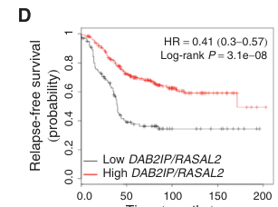

RASAL2 (RAS protein activator-like 2), also known as nGAP (neuronal GAP), is a dual-specificity GTPase-activating protein that catalyzes the hydrolysis of GTP bound to Ras and Rap small GTPases, converting them from their active GTP-bound state to their inactive GDP-bound state. The protein contains N-terminal pleckstrin homology (PH) domains, tandem calcium-binding C2 domains (C2A and C2B), and a catalytic GAP domain at the C-terminus. RASAL2 belongs to the SynGAP RasGAP subfamily (together with SynGAP, DAB2IP, and RASAL3) and functions as a critical negative regulator of Ras-ERK signaling through a conserved catalytic mechanism. It exhibits context-dependent functions, acting as a tumor suppressor in estrogen receptor-positive breast cancers through Ras inhibition (often cooperating non-redundantly with the SynGAP-family RasGAP DAB2IP to restrain RAS and NF-kB signaling), while showing pro-tumorigenic functions in triple-negative breast cancer through RAC1 activation via antagonizing ARHGAP24. The protein is also involved in autophagy regulation through phosphorylation-dependent switches that alter its substrate specificity and binding interactions, with AMPK-mediated phosphorylation at S351 converting RASAL2 from an autophagy suppressor (via PPM1B recruitment) to an autophagy activator (via PIK3C3/VPS34-ATG14-BECN1 binding) under glucose starvation.
| GO Term | Evidence | Action | Reason |
|---|---|---|---|
|
GO:0005096
GTPase activator activity
|
IBA
GO_REF:0000033 |
ACCEPT |
Summary: RASAL2 is a well-characterized GTPase-activating protein (GAP) that stimulates GTP hydrolysis of Ras and Rap small GTPases. The IBA annotation is supported by phylogenetic analysis and is consistent with extensive literature evidence demonstrating that RASAL2 functions as a RasGAP. Expression in Saccharomyces cerevisiae defective in Ira2 (a yeast RasGAP) complemented loss of Ira2 function [PMID:9877179]. The GAP domain contains a conserved arginine residue (R369) that functions as an "arginine finger" essential for catalysis [Reactome:R-HSA-5658435, UniProt:Q9UJF2].
Reason: This is a core molecular function of RASAL2. The protein contains a well-characterized RasGAP domain and has demonstrated GAP activity both in genetic complementation assays and biochemical studies. The IBA annotation is appropriate and supported by extensive evidence.
Supporting Evidence:
PMID:9877179
Expression of the cDNA in Saccharomyces cerevisiae defective in one of two RasGAPs, Ira2, complemented loss of the Ira2 function, indicating that the cDNA product functions as a RasGAP.
file:human/RASAL2/RASAL2-deep-research-perplexity.md
RASAL2 functions biochemically as a GTPase-activating protein (GAP) that dramatically accelerates the hydrolysis of guanosine triphosphate (GTP) bound to small GTPases of the Ras family.
PMID:33563064
RASAL2 (RAS protein activator like 2), a RASGTPase activating protein, can catalyze the hydrolysis of RAS-GTP into RAS-GDP to inactivate the RAS pathway in various types of cancer cells.
file:human/RASAL2/RASAL2-deep-research-falcon.md
**Primary molecular function (RASAL2):** by definition and domain composition, RASAL2's canonical biochemical role is to act as a RasGAP that down-regulates RAS signaling by accelerating GTP hydrolysis on RAS.
|
|
GO:1902531
regulation of intracellular signal transduction
|
IBA
GO_REF:0000033 |
ACCEPT |
Summary: RASAL2 regulates intracellular signal transduction through its GAP activity on Ras proteins, which are central mediators of signal transduction cascades downstream of receptor tyrosine kinases. RASAL2 negatively regulates the RAS-MAPK pathway, and loss of RASAL2 results in elevated Ras-GTP levels and hyperactivation of downstream signaling including MAPK/ERK and PI3K/Akt pathways [file:human/RASAL2/RASAL2-deep-research-perplexity.md].
Reason: This annotation accurately captures the biological process role of RASAL2. By regulating Ras GTPase activity, RASAL2 directly modulates intracellular signal transduction pathways. The IBA annotation is appropriate and consistent with the documented role of RASAL2 in Ras-MAPK signaling regulation.
Supporting Evidence:
file:human/RASAL2/RASAL2-deep-research-perplexity.md
RASAL2 functions as a negative regulator of the RAS-MAPK signaling pathway by catalyzing GTP hydrolysis of Ras proteins, thereby preventing accumulation of active Ras-GTP that drives proliferation, survival, and transformation signals.
PMID:27974415
While the suppression of each RasGAP activated K-Ras, H-Ras, ERK and AKT, the concomitant ablation of both RasGAPs dramatically enhanced the activation of all of these components, which overall appeared to be greater than an additive effect
PMID:33096593
RASAL2 functions as a tumor suppressor in a broad range of human tumors, including lung, ovarian, breast, and bladder cancer; low RASAL2 expression often correlates with aberrant Ras-ERK activation and worst prognosis
|
|
GO:0005096
GTPase activator activity
|
IEA
GO_REF:0000043 |
ACCEPT |
Summary: This IEA annotation is based on UniProtKB/Swiss-Prot keyword mapping for "GTPase activation". While less specific than the IBA annotation, it is accurate and consistent with RASAL2's demonstrated GAP activity.
Reason: This annotation correctly identifies the core molecular function of RASAL2. Although it duplicates the IBA annotation, IEA annotations based on keyword mapping are acceptable when they accurately reflect protein function. The annotation is appropriately broad for the evidence type.
Supporting Evidence:
PMID:9877179
We report the molecular cloning of a human cDNA that encodes a molecule having striking homology with Ras-specific GTPase-activating proteins (RasGAPs).
|
|
GO:0005515
protein binding
|
IPI
PMID:14743216 A physical and functional map of the human TNF-alpha/NF-kapp... |
MARK AS OVER ANNOTATED |
Summary: This annotation is from a high-throughput mapping study of the TNF-alpha/NF-kappa B signaling pathway. The study used tandem affinity purification and mass spectrometry to identify protein-protein interactions. RASAL2 was identified as an interactor, though no specific binding partner was highlighted for RASAL2 specifically.
Reason: While the experimental evidence for protein binding exists, "protein binding" (GO:0005515) is a vague, uninformative term that does not capture the functional significance of any interactions. High-throughput interaction studies identify many proteins, and this generic annotation does not provide insight into RASAL2's specific molecular role. More informative annotations such as specific binding partners or binding activities should be preferred.
Supporting Evidence:
PMID:14743216
Here we report the mapping of a protein interaction network around 32 known and candidate TNF-alpha/NF-kappa B pathway components by using an integrated approach comprising tandem affinity purification, liquid-chromatography tandem mass spectrometry, network analysis and directed functional perturbation studies using RNA interference.
|
|
GO:0005515
protein binding
|
IPI
PMID:15324660 Proteomic, functional, and domain-based analysis of in vivo ... |
MARK AS OVER ANNOTATED |
Summary: This annotation derives from a proteomic study identifying 14-3-3 binding proteins. RASAL2 was identified as a 14-3-3 interactor, which is biologically relevant as 14-3-3 proteins are known to regulate RasGAP family members through phospho-dependent binding. This interaction may regulate RASAL2 localization or activity.
Reason: While the 14-3-3 interaction is biologically meaningful and potentially relevant to RASAL2 regulation, the generic "protein binding" annotation fails to capture the specific nature of this interaction. A more informative term such as "14-3-3 protein binding" (GO:0071889) would be preferable if this interaction is to be annotated.
Supporting Evidence:
PMID:15324660
RESULTS: We have used mass spectrometry to analyze proteins that associate with 14-3-3 isoforms in HEK293 cells.
PMID:36931259
14-3-3 proteins are highly conserved regulatory proteins that interact with hundreds of structurally diverse clients and act as central hubs of signaling networks.
|
|
GO:0005515
protein binding
|
IPI
PMID:17353931 Large-scale mapping of human protein-protein interactions by... |
MARK AS OVER ANNOTATED |
Summary: This annotation is from the first large-scale IP-MS study of protein-protein interactions in human cells. RASAL2 was identified as a prey protein in this high-throughput screen, but no specific interaction context was provided.
Reason: High-throughput proteomics studies identify many protein interactions, but the generic "protein binding" annotation provides minimal biological insight. Without specific interaction partners or functional context, this annotation adds little to our understanding of RASAL2 function.
Supporting Evidence:
PMID:17353931
Mapping protein-protein interactions is an invaluable tool for understanding protein function. Here, we report the first large-scale study of protein-protein interactions in human cells using a mass spectrometry-based approach.
|
|
GO:0005515
protein binding
|
IPI
PMID:18985028 Hepatitis C virus infection protein network. |
MARK AS OVER ANNOTATED |
Summary: This annotation derives from a study mapping protein interactions between Hepatitis C virus (HCV) proteins and human cellular proteins. RASAL2 was identified as interacting with one or more HCV proteins, suggesting potential involvement in host-virus interactions.
Reason: While the HCV interaction is potentially interesting for understanding viral infection biology, the generic "protein binding" annotation is uninformative. The specific viral protein interaction and its functional consequence would be more meaningful if annotated with appropriate specificity.
Supporting Evidence:
PMID:18985028
A total of 314 protein-protein interactions between HCV and human proteins was identified by yeast two-hybrid and 170 by literature mining.
|
|
GO:0005515
protein binding
|
IPI
PMID:25416956 A proteome-scale map of the human interactome network. |
MARK AS OVER ANNOTATED |
Summary: This annotation comes from a proteome-scale mapping of the human interactome using yeast two-hybrid methodology. While comprehensive, the study provides no specific functional context for RASAL2 interactions.
Reason: Large-scale interactome mapping studies identify thousands of interactions but lack functional context. The generic "protein binding" term does not provide meaningful biological insight into RASAL2 function.
Supporting Evidence:
PMID:25416956
A proteome-scale map of the human interactome network.
|
|
GO:0005515
protein binding
|
IPI
PMID:28514442 Architecture of the human interactome defines protein commun... |
MARK AS OVER ANNOTATED |
Summary: This annotation derives from BioPlex 2.0, a large-scale affinity purification-mass spectrometry study of protein interactions in human cells. The study identified over 56,000 candidate interactions.
Reason: While BioPlex is a valuable resource for discovering protein interactions, the generic "protein binding" annotation does not convey biological insight. Specific interaction partners and their functional relevance would be more informative.
Supporting Evidence:
PMID:28514442
Here we present BioPlex 2.0 (Biophysical Interactions of ORFeome-derived complexes), which uses robust affinity purification-mass spectrometry methodology to elucidate protein interaction networks and co-complexes nucleated by more than 25% of protein-coding genes from the human genome, and constitutes, to our knowledge, the largest such network so far.
|
|
GO:0005515
protein binding
|
IPI
PMID:33961781 Dual proteome-scale networks reveal cell-specific remodeling... |
MARK AS OVER ANNOTATED |
Summary: This annotation is from BioPlex 3.0, an extension of the BioPlex interactome mapping project. The study created cell-line-specific interaction networks using affinity purification-mass spectrometry.
Reason: While the experimental evidence for protein binding exists, the generic "protein binding" term is uninformative. BioPlex 3.0 contains extensive interaction data, but without functional context, this annotation adds little to understanding RASAL2 biology.
Supporting Evidence:
PMID:33961781
Through affinity-purification mass spectrometry, we have created two proteome-scale, cell-line-specific interaction networks.
|
|
GO:0005515
protein binding
|
IPI
PMID:35271311 OpenCell: Endogenous tagging for the cartography of human ce... |
MARK AS OVER ANNOTATED |
Summary: This annotation comes from the OpenCell project, which used endogenous tagging and affinity purification-mass spectrometry to map protein interactions. This represents high-quality interaction data from proteins expressed at endogenous levels.
Reason: Although OpenCell provides high-quality interaction data from endogenously tagged proteins, the generic "protein binding" annotation remains uninformative. Specific interaction partners and their functional implications would be more valuable.
Supporting Evidence:
PMID:35271311
OpenCell: Endogenous tagging for the cartography of human cellular organization.
|
|
GO:0005515
protein binding
|
IPI
PMID:36931259 A central chaperone-like role for 14-3-3 proteins in human c... |
MARK AS OVER ANNOTATED |
Summary: This annotation derives from a study characterizing 14-3-3 protein interactions in human cells. RASAL2 was identified as a 14-3-3 client protein. 14-3-3 binding is biologically relevant as these proteins act as central hubs in signaling networks and may regulate RASAL2 activity through phosphorylation-dependent binding.
Reason: The 14-3-3 interaction is biologically meaningful, but "protein binding" is too generic. A more specific term such as "14-3-3 protein binding" (GO:0071889) would better capture this interaction. The interaction suggests RASAL2 may be regulated by phosphorylation-dependent 14-3-3 binding.
Supporting Evidence:
PMID:36931259
14-3-3 proteins are highly conserved regulatory proteins that interact with hundreds of structurally diverse clients and act as central hubs of signaling networks.
|
|
GO:0002021
response to dietary excess
|
IEA
GO_REF:0000107 |
KEEP AS NON CORE |
Summary: This annotation is based on automatic transfer from orthologous genes in other species (Ensembl Compara). While RASAL2 has been implicated in metabolic signaling through its role in AMPK-dependent autophagy regulation and is associated with insulin resistance in some contexts [file:human/RASAL2/RASAL2-deep-research-perplexity.md], direct evidence for a role in response to dietary excess in humans is limited.
Reason: RASAL2 has documented roles in metabolic signaling, particularly in autophagy regulation under nutrient stress conditions. However, this annotation represents a peripheral phenotypic association rather than a core function of RASAL2. The annotation is retained but marked as non-core due to limited direct evidence in humans.
Supporting Evidence:
file:human/RASAL2/RASAL2-deep-research-perplexity.md
RASAL2 functions as a critical regulator of autophagy, a cellular degradation pathway essential for survival under nutrient stress and conditions of energy depletion.
|
|
GO:0009749
response to glucose
|
IEA
GO_REF:0000107 |
KEEP AS NON CORE |
Summary: This annotation is based on ortholog transfer. RASAL2 does respond to glucose levels through its interaction with the AMPK pathway. Under glucose deprivation, RASAL2 is phosphorylated at S351 by AMPK, leading to autophagy activation [file:human/RASAL2/RASAL2-deep-research-perplexity.md]. This represents a documented metabolic regulatory function.
Reason: While RASAL2 does have documented involvement in glucose-responsive signaling through AMPK-dependent phosphorylation, this represents a metabolic regulatory role rather than a core molecular function. The annotation is retained as it reflects documented biology, but marked as non-core as it is not the primary function of RASAL2.
Supporting Evidence:
file:human/RASAL2/RASAL2-deep-research-perplexity.md
Phosphorylation at serine 351 (S351) within the PH domain represents a target of AMPK-mediated phosphorylation under glucose-deprivation conditions, with this phosphorylation switching RASAL2 from a suppressor of autophagy under nutrient-rich conditions to a promoter of autophagy under nutrient-stress conditions.
PMID:33563064
we found that glucose starvation could induce dissociation of PPM1B from RASAL2 and then RASAL2 at S351 be phosphorylated by PRKAA, followed by the binding of phosphorylated-RASAL2 with to PIK3C3/VPS34-ATG14-BECN1/Beclin1 complex to increase PIK3C3 activity and autophagy.
|
|
GO:0010467
gene expression
|
IEA
GO_REF:0000107 |
MARK AS OVER ANNOTATED |
Summary: This annotation is based on ortholog transfer. While RASAL2 indirectly affects gene expression through its regulation of Ras-MAPK signaling, which modulates transcription factor activity, this is a very indirect and broad annotation.
Reason: "Gene expression" is an extremely broad biological process. RASAL2's influence on gene expression is indirect, occurring through modulation of Ras-MAPK signaling and downstream transcription factors. This annotation does not capture the specific mechanism or provide useful biological insight.
Supporting Evidence:
file:human/RASAL2/RASAL2-deep-research-perplexity.md
Loss or suppression of RASAL2 in human breast cancers and other tumor types results in elevated levels of active Ras-GTP and consequent hyperactivation of downstream MAPK/ERK signaling, leading to increased phosphorylation of ERK and enhanced phosphorylation of transcription factors that drive cell proliferation.
|
|
GO:0035264
multicellular organism growth
|
IEA
GO_REF:0000107 |
MARK AS OVER ANNOTATED |
Summary: This annotation is based on ortholog transfer. While RASAL2 affects cell proliferation through Ras pathway regulation, and mutations in RASAL2 have been associated with cancer growth, the specific annotation of "multicellular organism growth" is very broad and indirect.
Reason: This is an extremely broad biological process annotation. RASAL2 influences cellular proliferation through Ras signaling modulation, but "multicellular organism growth" does not provide specific insight into RASAL2's molecular or cellular function. More specific annotations related to cell proliferation or Ras signaling would be more appropriate.
Supporting Evidence:
file:human/RASAL2/RASAL2-deep-research-perplexity.md
Genetic studies in engineered mouse models provide in vivo validation of RASAL2's tumor-suppressive function, as Rasal2 mutations in luminal mammary cancer models dramatically enhance metastasis.
|
|
GO:0060612
adipose tissue development
|
IEA
GO_REF:0000107 |
KEEP AS NON CORE |
Summary: This annotation is based on ortholog transfer. RASAL2 has been implicated in metabolic signaling and glucose responses, and adipose tissue development involves many signaling pathways. However, direct evidence for RASAL2 involvement in adipose tissue development in humans is limited.
Reason: While there may be some involvement of RASAL2 in metabolic processes that affect adipose tissue, this annotation represents a peripheral phenotypic association rather than a core function. The annotation is retained based on ortholog evidence but marked as non-core.
Supporting Evidence:
file:human/RASAL2/RASAL2-deep-research-perplexity.md
RASAL2 functions as a critical regulator of autophagy and metabolic stress responses.
|
|
GO:2000257
regulation of protein activation cascade
|
IEA
GO_REF:0000107 |
KEEP AS NON CORE |
Summary: This annotation is based on ortholog transfer. RASAL2 regulates the Ras-MAPK signaling cascade by modulating Ras GTPase activity. This annotation captures an aspect of RASAL2's signaling function, though it is quite general.
Reason: While RASAL2 does regulate protein activation cascades through its modulation of Ras signaling, this annotation is somewhat redundant with the "regulation of intracellular signal transduction" annotation and does not provide additional specific insight. Retained as non-core as it accurately describes an aspect of RASAL2 function but is not the most informative annotation.
Supporting Evidence:
file:human/RASAL2/RASAL2-deep-research-perplexity.md
RASAL2 functions as a negative regulator of the RAS-MAPK signaling pathway by catalyzing GTP hydrolysis of Ras proteins.
|
|
GO:0005829
cytosol
|
TAS
Reactome:R-HSA-5658231 |
ACCEPT |
Summary: This annotation indicates cytosolic localization based on Reactome pathway annotation. RASAL2 is predominantly cytoplasmic with enrichment at the plasma membrane upon calcium-dependent membrane recruitment through its C2 domains [file:human/RASAL2/RASAL2-deep-research-perplexity.md]. The cytosol annotation is accurate for the basal state of the protein.
Reason: RASAL2 is documented to localize to the cytoplasm/cytosol, with translocation to the plasma membrane occurring upon activation via calcium-dependent C2 domain-mediated membrane binding. The cytosol annotation accurately reflects the resting state localization.
Supporting Evidence:
Reactome:R-HSA-5658231
The intrinsic GTPase activity of RAS proteins is stimulated by the GAP proteins, of which there are at least 10 in the human genome (reviewed in King et al, 2013).
file:human/RASAL2/RASAL2-deep-research-perplexity.md
RASAL2 localizes predominantly to the cytoplasm with enrichment at specific subcellular compartments including the plasma membrane and focal adhesion sites.
|
|
GO:0005829
cytosol
|
TAS
Reactome:R-HSA-5658435 |
ACCEPT |
Summary: This is a duplicate cytosol annotation from a different Reactome pathway reference (RAS GAPs bind RAS:GTP). The annotation is accurate and consistent with RASAL2's documented cytoplasmic localization.
Reason: This annotation correctly identifies cytosolic localization of RASAL2. Although it duplicates the other cytosol annotation with a different reference, it is appropriate as it derives from a different Reactome pathway context (RAS binding versus GAP activity).
Supporting Evidence:
Reactome:R-HSA-5658435
These identified RAS GAP proteins are RASA1 (also known as p120 GAP), NF1, the GAP1 family (RASA2, RASA3, RASA4 and RASAL1) and the SYNGAP family (SYNGAP1, DAB2IP, RASAL2 and RASAL3).
|
|
GO:0005096
GTPase activator activity
|
TAS
PMID:9877179 A novel human RasGAP-like gene that maps within the prostate... |
ACCEPT |
Summary: This TAS annotation is based on the original characterization of RASAL2 showing that it functions as a RasGAP. The study demonstrated that expression of RASAL2 in yeast defective in Ira2 (a RasGAP) complemented the loss of Ira2 function, providing functional evidence for GAP activity [PMID:9877179].
Reason: This annotation is based on direct experimental evidence demonstrating RASAL2 functions as a RasGAP. The yeast complementation assay provides strong functional evidence. This is a core molecular function of RASAL2.
Supporting Evidence:
PMID:9877179
Expression of the cDNA in Saccharomyces cerevisiae defective in one of two RasGAPs, Ira2, complemented loss of the Ira2 function, indicating that the cDNA product functions as a RasGAP.
|
|
GO:0007165
signal transduction
|
TAS
PMID:9877179 A novel human RasGAP-like gene that maps within the prostate... |
ACCEPT |
Summary: This annotation indicates involvement in signal transduction based on the original RASAL2 characterization. As a RasGAP, RASAL2 modulates Ras signaling, which is a central component of signal transduction pathways downstream of receptor tyrosine kinases.
Reason: RASAL2 functions as a negative regulator of Ras signaling, which is a core signal transduction pathway. The annotation accurately captures RASAL2's biological role and is supported by the original characterization paper and subsequent studies.
Supporting Evidence:
PMID:9877179
We report the molecular cloning of a human cDNA that encodes a molecule having striking homology with Ras-specific GTPase-activating proteins (RasGAPs).
file:human/RASAL2/RASAL2-deep-research-perplexity.md
RASAL2 functions as a negative regulator of the RAS-MAPK signaling pathway.
file:human/RASAL2/RASAL2-deep-research-falcon.md
By its RasGAP catalytic function, RASAL2 is placed upstream of major RAS effector pathways (e.g., ERK/MAPK, PI3K/AKT) as a **negative regulator**.
|
|
GO:0005099
Ras GTPase activator activity
|
TAS
PMID:9877179 A novel human RasGAP-like gene that maps within the prostate... |
NEW |
Summary: This annotation is a more specific MF term than GO:0005096 that accurately captures RASAL2's specific activity on Ras GTPases. RASAL2 is a RasGAP family member with demonstrated Ras-specific GAP activity.
Reason: GO:0005099 (Ras GTPase activator activity) is more specific than the existing GO:0005096 (GTPase activator activity) annotations and better represents RASAL2's characterized molecular function. The yeast complementation assay specifically demonstrated Ras GAP activity.
Supporting Evidence:
PMID:9877179
Expression of the cDNA in Saccharomyces cerevisiae defective in one of two RasGAPs, Ira2, complemented loss of the Ira2 function, indicating that the cDNA product functions as a RasGAP.
file:human/RASAL2/RASAL2-deep-research-perplexity.md
RASAL2 functions biochemically as a GTPase-activating protein (GAP) that dramatically accelerates the hydrolysis of guanosine triphosphate (GTP) bound to small GTPases of the Ras family.
|
Q: What is the relative contribution of RASAL2's Ras versus Rap GAP activity to its biological functions in different cellular contexts?
Q: How does the phosphorylation-dependent switch between tumor suppressive and oncogenic functions operate at the molecular level?
Q: What determines whether RASAL2 functions as a tumor suppressor or oncogene in different breast cancer subtypes?
Q: Does RASAL2 have additional non-catalytic functions through its C2 and PH domains beyond membrane targeting?
Experiment: Characterize the substrate specificity of RASAL2 toward different Ras and Rap isoforms using in vitro GAP assays
Experiment: Investigate the structural basis for the phosphorylation-dependent functional switch using crystallography or cryo-EM
Experiment: Use CRISPR knockin of phospho-mimetic and phospho-dead mutants to dissect the role of specific phosphorylation sites in vivo
Experiment: Examine RASAL2 interactions with ARHGAP24 and their effects on RAC1 signaling in different cancer cell lines
The research report should be a detailed narrative explaining the function, biological processes, and localization of the gene product. Citations should be given for all claims.
You should prioritize authoritative reviews and primary scientific literature when conducting research. You can supplement
this with annotations you find in gene/protein databases, but these can be outdated or inaccurate.
We are specifically interested in the primary function of the gene - for enzymes, what reaction is catalyzed, and what is the substrate specificity? For transporters, what is the substrate? For structural proteins or adapters, what is the broader structural role? For signaling molecules, what is the role in the pathway.
We are interested in where in or outside the cell the gene product carries out its function.
We are also interested in the signaling or biochemical pathways in which the gene functions. We are less interested in broad pleiotropic effects, except where these elucidate the precise role.
Include evidence where possible. We are interested in both experimental evidence as well as inference from structure, evolution, or bioinformatic analysis. Precise studies should be prioritized over high-throughput, where available.
The target in scope is human RASAL2 (RAS protein activator-like 2; also called nGAP) corresponding to UniProt Q9UJF2. Independent RasGAP-focused reviews describe RASAL2 as a PH–C2–RasGAP domain protein of ~1139 aa, consistent with the UniProt description and with RasGAP-family architecture. (stewart2020pumpingthebrakes pages 2-3)
RAS proteins are small GTPases that toggle between an “on” (GTP-bound) and “off” (GDP-bound) state. RasGAPs accelerate the intrinsic GTP hydrolysis rate of RAS, thereby promoting the conversion of RAS-GTP → RAS-GDP (functional inactivation of RAS signaling). Reviews of Ras negative regulation highlight that the GTPase-stimulating activity resides in the C-terminal GAP domain and that loss of RasGAP function leads to accumulation of GTP-bound RAS with increased downstream signaling. (stewart2020pumpingthebrakes pages 2-3)
Primary molecular function (RASAL2): by definition and domain composition, RASAL2’s canonical biochemical role is to act as a RasGAP that down-regulates RAS signaling by accelerating GTP hydrolysis on RAS. (stewart2020pumpingthebrakes pages 2-3)
A RasGAP review that explicitly lists RASAL2 describes it as a PH domain + C2 domain + C-terminal RasGAP domain protein. (stewart2020pumpingthebrakes pages 2-3)
Functional interpretation (current model): Ras is membrane-associated; therefore, noncatalytic domains (PH/C2) are widely discussed as contributing to membrane targeting and/or protein–protein interactions that position the GAP domain to engage membrane-localized RAS. (stewart2020pumpingthebrakes pages 2-3)
A RasGAP-centered cancer review synthesizes a major theme for RASAL2: it is frequently described as a tumor suppressor in multiple cancers (low expression associated with Ras–ERK activation and worse prognosis), yet it can also behave in some contexts as an oncogenic driver of EMT/metastasis, with reported links to YAP, Wnt/β-catenin, PI3K/AKT, and Rac1 pathway wiring. This is presented as a context-dependent phenomenon and a key interpretive issue in the RASAL2 literature. (bellazzo2020cuttingthebrakes pages 3-5)
By its RasGAP catalytic function, RASAL2 is placed upstream of major RAS effector pathways (e.g., ERK/MAPK, PI3K/AKT) as a negative regulator. The “Ras brakes” reviews emphasize that RasGAP loss increases signaling through RAS-regulated pathways. (stewart2020pumpingthebrakes pages 2-3)
In luminal breast cancer models, combined perturbation of RasGAP tumor suppressors (RASAL2 with DAB2IP) is described as producing strong activation of ERK and AKT outputs, supporting the view that RasGAP co-loss can amplify multiple RAS-pathway branches. (olsen2017lossofrasgap pages 11-11)
A key mechanistic concept from the luminal breast cancer literature is cooperative tumor suppression by two RasGAPs, RASAL2 and DAB2IP. The Cancer Discovery study reports that combined loss promotes invasiveness and EMT, and that reconstitution of both genes suppresses metastasis in vivo. (olsen2017lossofrasgap pages 5-6, olsen2017lossofrasgap pages 7-8)
A later 2024 review focused on DAB2IP frames this cooperation as nonredundant and notes that concomitant loss of both RasGAPs “dramatically increased invasion and metastasis” in ER+ breast cancer models, reinforcing the concept that RasGAP network integrity is important for metastasis control. (fania2024anupdateon pages 1-2)
A 2024 JCI Insight paper also highlights that DAB2IP loss often occurs together with loss of RASAL2 and links this to poor outcome in luminal breast cancer contexts, placing RASAL2 within a clinically relevant RasGAP-loss state. (mukherjee2024dab2iplossin pages 1-2)
RAS is anchored to membranes; accordingly, RasGAP modular domains are interpreted as contributing to localization. A Ras-regulator review explicitly lists RASAL2’s PH and C2 domains and discusses such domains as mediating membrane targeting and interactions enabling Ras engagement at membranes. (stewart2020pumpingthebrakes pages 2-3)
A RasGAP cancer review specifically notes phosphorylation within the PH domain and underscores that membrane localization is important for RasGAP function/activity. (bellazzo2020cuttingthebrakes pages 3-5)
Evidence limitation: The retrieved corpus contains general RasGAP-domain architecture and membrane-targeting interpretations (PH/C2), but limited direct, RASAL2-specific cell biology (e.g., imaging/localization maps) beyond these review statements; this should be considered when interpreting localization claims as inference from domain architecture rather than a definitive localization atlas. (stewart2020pumpingthebrakes pages 2-3, bellazzo2020cuttingthebrakes pages 3-5)
A mechanistic Autophagy study (Feb 2021) reports a detailed regulatory model connecting RASAL2 to nutrient stress and autophagy:
This work explicitly states that RASAL2 S351 phosphorylation functions as a molecular switch that can convert RASAL2 from an autophagy suppressor into an autophagy activator, and links this to breast tumor growth and poor outcomes (qualitatively described in the excerpt). (bao2021prkaaampkαphosphorylationswitches pages 1-3)
A phosphoproteomics-driven study of LKB1 signaling identifies RASAL2 as an LKB1-dependent phosphoprotein (>2-fold in both attached and detached datasets) and proposes candidate AMPK-related phosphorylation sites: S56, S89, S736, S864, S899. LKB1-dependent phosphorylation increases are reported at S89, S736, and S864, with genetic data implicating MARK kinases and SIK family members (notably SIK1+SIK3) in detachment-associated phosphorylation patterns; AMPK contributes partially in some assays. (kamireddy2020aquantitativephosphoproteomicsa pages 50-55, kamireddy2020aquantitativephosphoproteomicsa pages 55-59)
A RasGAP cancer review notes that RASAL2 can be phosphorylated on Ser237 within the PH domain (review statement), consistent with the broader theme that regulatory phosphorylation can tune RasGAP localization or function. (bellazzo2020cuttingthebrakes pages 3-5)
A 2023 study in cervical cancer (BIOCELL; Jan 2023) reports:
This study uses overexpression/knockdown in HeLa/SiHa cells to show functional suppression of proliferation/migration/invasion and induction of apoptosis with RASAL2 restoration. (chen2023rasal2actsas pages 3-7)
A 2024 review (Cell Death & Differentiation; Jun 2024) highlights that DAB2IP is a RasGAP and adaptor modulating multiple oncogenic pathways (NF-κB, Wnt/β-catenin, PI3K/AKT, MAPK) and explicitly notes functional cooperation with RASAL2 in limiting metastasis in ER+ breast cancer; the review frames restoration/upregulation of DAB2IP as a potential strategy that concurrently dampens multiple oncogenic pathways. (fania2024anupdateon pages 1-2, fania2024anupdateon pages 2-3)
A 2024 JCI Insight paper (Dec 2024) further contextualizes RasGAP loss as clinically meaningful in ER+ breast cancer, noting that DAB2IP loss often co-occurs with RASAL2 loss and that such RasGAP-loss states are associated with poorer outcomes, with an explicit statement that co-loss promotes poorer outcome in ~50% of Luminal B breast cancer. (mukherjee2024dab2iplossin pages 1-2)
The strongest “real-world” implementation supported by the retrieved evidence is risk stratification based on RasGAP expression patterns.
In luminal B breast cancer, Olsen et al. (Cancer Discovery; Feb 2017) report tumor subsets with low RASAL2 and/or DAB2IP, including 16% low RASAL2, 24% low DAB2IP, and 22% low both. The combined low-expression state stratifies relapse-free survival with a highly significant log-rank P = 3.1×10⁻⁸. (olsen2017lossofrasgap pages 5-6, olsen2017lossofrasgap media 3a556391)
These quantitative patterns are visually supported by the paper’s figures: the low-expression distribution (pie chart) and Kaplan–Meier plot are available as extracted figure crops. (olsen2017lossofrasgap media 3a556391, olsen2017lossofrasgap media 8e13ab1a)
The same study provides preclinical “implementation” in the sense of actionable mechanistic circuitry: reconstitution of both RASAL2 and DAB2IP markedly reduced metastasis versus single-gene reconstitution controls in luminal breast cancer models (reported P values include P=0.043 vs RASAL2 alone, P=0.002 vs DAB2IP alone, and bioluminescence total flux P=0.004). (olsen2017lossofrasgap pages 7-8)
The authors also report clinical associations with stage: tumors lacking both genes were enriched for stage II–IV disease and differed from tumors expressing both genes (P<0.05), consistent with a metastasis/aggressiveness linkage. (olsen2017lossofrasgap pages 6-7)
Using the clinical-trial search tool with “RASAL2” did not yield RASAL2-targeted interventional trials; the retrieved trial appears unrelated to RASAL2 biology, suggesting the term does not map cleanly to trial metadata in this interface. Therefore, current “applications” are better supported as biomarker/prognostic or mechanistic pathway uses rather than direct RASAL2-targeted therapeutics in clinical trials (based on available evidence). (mukherjee2024dab2iplossin pages 1-2)
A consistent expert synthesis across RasGAP-focused reviews is that Ras pathway hyperactivation can arise not only from RAS mutations but also from defects in RAS regulators, including RasGAP loss/inactivation; RasGAPs are modular proteins whose noncatalytic domains contribute to localization and regulatory interactions, meaning “RasGAP loss” can rewire signaling beyond simply increasing Ras-GTP. (stewart2020pumpingthebrakes pages 2-3, bellazzo2020cuttingthebrakes pages 3-5)
The 2024 DAB2IP review explicitly uses the RASAL2/DAB2IP cooperation as an example of nonredundant tumor-suppressive RasGAP circuitry in ER+ breast cancer metastasis and frames this as relevant to therapeutic thinking—particularly strategies that restore RasGAP function to dampen multiple oncogenic pathways simultaneously (in that review, emphasized for DAB2IP). (fania2024anupdateon pages 1-2)
Extracted figure regions from Olsen et al. (Cancer Discovery 2017) provide visual documentation of (i) the distribution of low RASAL2/DAB2IP expression states in luminal B tumors and (ii) the relapse-free survival stratification by combined RasGAP status, plus a schematic model for cooperative regulation of RAS and NF-κB signaling in metastasis. (olsen2017lossofrasgap media 3a556391, olsen2017lossofrasgap media 2deeb97b)
| Claim/Topic | Key finding | Evidence type | Source | Publication date | URL/DOI |
|---|---|---|---|---|---|
| Target identity / core function | Human RASAL2 corresponds to RAS protein activator like 2 / nGAP, a RasGAP-family protein of 1,139 aa; RasGAPs accelerate conversion of RAS-GTP to RAS-GDP, thereby suppressing RAS signaling (stewart2020pumpingthebrakes pages 2-3) | Review / domain summary | Stewart, Journal of Cell Science | Feb 2020 | https://doi.org/10.1242/jcs.238865 |
| Domains | RASAL2 is described as containing PH, C2, and C-terminal RasGAP domains; noncatalytic domains are implicated in membrane targeting/interactions needed to position RasGAPs near membrane-associated RAS (stewart2020pumpingthebrakes pages 2-3) | Review | Stewart, Journal of Cell Science | Feb 2020 | https://doi.org/10.1242/jcs.238865 |
| Family / current understanding | Review classifies RASAL2 among cytoplasmic RasGAPs and notes that loss of RasGAPs can elevate Ras pathway output; RASAL2 has context-dependent tumor-suppressive or oncogenic roles across cancers (bellazzo2020cuttingthebrakes pages 3-5, stewart2020pumpingthebrakes pages 2-3) | Review | Bellazzo, Cancers; Stewart, Journal of Cell Science | Oct 2020; Feb 2020 | https://doi.org/10.3390/cancers12103066 ; https://doi.org/10.1242/jcs.238865 |
| Localization | Review evidence indicates PH and C2 domains promote constitutive plasma membrane association, and RASAL2 associates with membranes at the leading edge; however, detailed RASAL2-specific mechanistic localization data remain limited in gathered evidence (olsen2017lossofrasgap pages 5-6) (olsen2017lossofrasgap pages 5-6) | Review / inferred from family biology | King, Science Signaling | Feb 2013 | https://doi.org/10.1126/scisignal.2003669 |
| Regulation / PTM | Review notes RASAL2 can be phosphorylated on Ser237 within the PH domain and that membrane localization is important for RasGAP activity (bellazzo2020cuttingthebrakes pages 3-5) | Review | Bellazzo, Cancers | Oct 2020 | https://doi.org/10.3390/cancers12103066 |
| Regulation / PTM | AMPK (PRKAA) phosphorylates RASAL2 at S351 under glucose starvation; this promotes dissociation from PPM1B and enables phosphorylated RASAL2 to bind the PIK3C3/VPS34-ATG14-BECN1 complex, increasing PIK3C3 activity and autophagy (bao2021prkaaampkαphosphorylationswitches pages 1-3, bao2021prkaaampkαphosphorylationswitches pages 3-4) | Primary; cell biology / autophagy assays | Bao, Autophagy | Feb 2021 | https://doi.org/10.1080/15548627.2021.1886767 |
| Binding partners / mechanism | Under basal conditions RASAL2 recruits PPM1B/pp2cβ to attenuate AMPK phosphorylation; glucose starvation causes PPM1B dissociation and converts RASAL2 into an autophagy activator via the VPS34 complex (bao2021prkaaampkαphosphorylationswitches pages 1-3, bao2021prkaaampkαphosphorylationswitches pages 3-4) | Primary; interaction and functional assays | Bao, Autophagy | Feb 2021 | https://doi.org/10.1080/15548627.2021.1886767 |
| Functional nuance | RASAL2’s inhibition of basal autophagy is reported to be independent of RasGAP catalytic activity, although the GAP domain is required for this inhibitory role (bao2021prkaaampkαphosphorylationswitches pages 3-4) | Primary; KO/rescue functional assays | Bao, Autophagy | Feb 2021 | https://doi.org/10.1080/15548627.2021.1886767 |
| Regulation / phosphoproteomics | LKB1-dependent phosphoproteomics identified candidate AMPK-related phosphorylation sites on RASAL2: S56, S89, S736, S864, S899; phosphoenriched data showed LKB1-dependent increases at S89, S736, S864 (kamireddy2020aquantitativephosphoproteomicsa pages 50-55, kamireddy2020aquantitativephosphoproteomics pages 50-55) | Primary; phosphoproteomics | Kamireddy, phosphoproteomics study | 2020 | URL not available in gathered evidence |
| Upstream kinases | In detachment settings, SIK1 + SIK3 knockout/knockdown abolished the LKB1-dependent AMPK-motif phospho-signal on RASAL2; AMPK contributed partially; MARKs were also implicated for some sites (kamireddy2020aquantitativephosphoproteomics pages 50-55, kamireddy2020aquantitativephosphoproteomicsa pages 55-59, kamireddy2020aquantitativephosphoproteomics pages 55-59) | Primary; phosphoproteomics / IP / kinase KO | Kamireddy, phosphoproteomics study | 2020 | URL not available in gathered evidence |
| Pathways | In cancer literature, RASAL2 loss is linked to enhanced Ras–ERK/MAPK signaling; context-dependent reports also connect RASAL2 to YAP, Wnt/β-catenin, PI3K/AKT, and Rac1 signaling (bellazzo2020cuttingthebrakes pages 3-5, bao2021prkaaampkαphosphorylationswitches pages 1-3) | Review + primary mechanistic context | Bellazzo, Cancers; Bao, Autophagy | Oct 2020; Feb 2021 | https://doi.org/10.3390/cancers12103066 ; https://doi.org/10.1080/15548627.2021.1886767 |
| Disease / breast cancer cohort | In luminal B breast tumors, 16% showed low RASAL2, 24% low DAB2IP, and 22% low expression of both; combined low expression strongly stratified relapse-free survival (log-rank P = 3.1e-08) (olsen2017lossofrasgap pages 5-6, olsen2017lossofrasgap media 3a556391) | Primary; patient cohort / Kaplan–Meier | Olsen, Cancer Discovery | Feb 2017 | https://doi.org/10.1158/2159-8290.CD-16-0520 |
| Disease / metastasis mechanism | In luminal breast cancer models, RASAL2 and DAB2IP cooperate to suppress metastasis; reconstitution of both genes reduced metastasis versus single-gene reconstitution or control (P = 0.043 vs RASAL2 alone; P = 0.002 vs DAB2IP alone; total flux P = 0.004) (olsen2017lossofrasgap pages 7-8) | Primary; xenograft / intracardiac metastasis assays | Olsen, Cancer Discovery | Feb 2017 | https://doi.org/10.1158/2159-8290.CD-16-0520 |
| Disease / metastatic phenotypes | In McNeu luminal mouse cancer cells, shRNA codepletion of Rasal2 + Dab2ip significantly increased metastatic lung lesions after tail-vein injection (P = 0.0019) (olsen2017lossofrasgap pages 7-8) | Primary; mouse metastasis assay | Olsen, Cancer Discovery | Feb 2017 | https://doi.org/10.1158/2159-8290.CD-16-0520 |
| Disease / tumor growth | In CAMA1 xenografts, RASAL2 or DAB2IP suppression significantly affected tumor formation/growth (reported P values for individual perturbations include 0.0043, 0.0087 for DAB2IP guides and 0.0016, 0.0022 for RASAL2 shRNAs); combined suppression also reported with P = 0.008, though legend notes no statistically significant increase in tumor volume upon combined suppression (olsen2017lossofrasgap pages 5-6) | Primary; xenograft / CRISPR-shRNA | Olsen, Cancer Discovery | Feb 2017 | https://doi.org/10.1158/2159-8290.CD-16-0520 |
| Clinical relevance / expert view | Reviews emphasize that RASAL2 behaves as a context-dependent RasGAP regulator: often tumor suppressive when expression is lost and Ras signaling rises, but in some settings capable of promoting EMT/metastatic programs through noncanonical pathway wiring (bellazzo2020cuttingthebrakes pages 3-5, bao2021prkaaampkαphosphorylationswitches pages 1-3) | Review / expert synthesis | Bellazzo, Cancers; Bao, Autophagy | Oct 2020; Feb 2021 | https://doi.org/10.3390/cancers12103066 ; https://doi.org/10.1080/15548627.2021.1886767 |
Table: This table compiles the key evidence gathered for human RASAL2, covering molecular function, domains, localization, regulation, pathways, and disease relevance. It highlights residue-level PTMs, pathway interactions, and clinically relevant statistics from breast cancer studies.
References
(stewart2020pumpingthebrakes pages 2-3): Desmond R. Harrell Stewart and Geoffrey J. Clark. Pumping the brakes on ras – negative regulators and death effectors of ras. Journal of Cell Science, Feb 2020. URL: https://doi.org/10.1242/jcs.238865, doi:10.1242/jcs.238865. This article has 35 citations and is from a domain leading peer-reviewed journal.
(bellazzo2020cuttingthebrakes pages 3-5): Arianna Bellazzo and Licio Collavin. Cutting the brakes on ras—cytoplasmic gaps as targets of inactivation in cancer. Cancers, 12:3066, Oct 2020. URL: https://doi.org/10.3390/cancers12103066, doi:10.3390/cancers12103066. This article has 21 citations.
(olsen2017lossofrasgap pages 11-11): Sarah Naomi Olsen, Ania Wronski, Zafira Castaño, Benjamin Dake, Clare Malone, Thomas De Raedt, Miriam Enos, Yoko S. DeRose, Wenhui Zhou, Stephanie Guerra, Massimo Loda, Alana Welm, Ann H. Partridge, Sandra S. McAllister, Charlotte Kuperwasser, and Karen Cichowski. Loss of rasgap tumor suppressors underlies the aggressive nature of luminal b breast cancers. Cancer Discovery, 7(2):202-217, Feb 2017. URL: https://doi.org/10.1158/2159-8290.cd-16-0520, doi:10.1158/2159-8290.cd-16-0520. This article has 72 citations and is from a highest quality peer-reviewed journal.
(olsen2017lossofrasgap pages 5-6): Sarah Naomi Olsen, Ania Wronski, Zafira Castaño, Benjamin Dake, Clare Malone, Thomas De Raedt, Miriam Enos, Yoko S. DeRose, Wenhui Zhou, Stephanie Guerra, Massimo Loda, Alana Welm, Ann H. Partridge, Sandra S. McAllister, Charlotte Kuperwasser, and Karen Cichowski. Loss of rasgap tumor suppressors underlies the aggressive nature of luminal b breast cancers. Cancer Discovery, 7(2):202-217, Feb 2017. URL: https://doi.org/10.1158/2159-8290.cd-16-0520, doi:10.1158/2159-8290.cd-16-0520. This article has 72 citations and is from a highest quality peer-reviewed journal.
(olsen2017lossofrasgap pages 7-8): Sarah Naomi Olsen, Ania Wronski, Zafira Castaño, Benjamin Dake, Clare Malone, Thomas De Raedt, Miriam Enos, Yoko S. DeRose, Wenhui Zhou, Stephanie Guerra, Massimo Loda, Alana Welm, Ann H. Partridge, Sandra S. McAllister, Charlotte Kuperwasser, and Karen Cichowski. Loss of rasgap tumor suppressors underlies the aggressive nature of luminal b breast cancers. Cancer Discovery, 7(2):202-217, Feb 2017. URL: https://doi.org/10.1158/2159-8290.cd-16-0520, doi:10.1158/2159-8290.cd-16-0520. This article has 72 citations and is from a highest quality peer-reviewed journal.
(fania2024anupdateon pages 1-2): Rossella De Florian Fania, Arianna Bellazzo, and Licio Collavin. An update on the tumor-suppressive functions of the rasgap protein dab2ip with focus on therapeutic implications. Cell Death and Differentiation, 31:844-854, Jun 2024. URL: https://doi.org/10.1038/s41418-024-01332-3, doi:10.1038/s41418-024-01332-3. This article has 8 citations and is from a domain leading peer-reviewed journal.
(mukherjee2024dab2iplossin pages 1-2): Angana Mukherjee, Rasha T. Kakati, Sarah Van Alsten, Tyler Laws, Aaron L. Ebbs, Daniel P. Hollern, Philip M. Spanheimer, Katherine A. Hoadley, Melissa A. Troester, Jeremy M. Simon, and Albert S. Baldwin. Dab2ip loss in luminal a breast cancer leads to nf-κb–associated aggressive oncogenic phenotypes. Dec 2024. URL: https://doi.org/10.1172/jci.insight.171705, doi:10.1172/jci.insight.171705. This article has 4 citations and is from a domain leading peer-reviewed journal.
(bao2021prkaaampkαphosphorylationswitches pages 1-3): Yong Bao, Christopher Qian, Meng-Yue Liu, Fei Jiang, Xiaoxiao Jiang, Huijuan Liu, Zhuqing Zhang, Fanghui Sun, Ningwei Fu, Zhaoyuan Hou, Ya Ke, Yan Li, and Zhong-Ming Qian. Prkaa/ampkα phosphorylation switches the role of rasal2 from a suppressor to an activator of autophagy. Feb 2021. URL: https://doi.org/10.1080/15548627.2021.1886767, doi:10.1080/15548627.2021.1886767. This article has 22 citations and is from a domain leading peer-reviewed journal.
(bao2021prkaaampkαphosphorylationswitches pages 3-4): Yong Bao, Christopher Qian, Meng-Yue Liu, Fei Jiang, Xiaoxiao Jiang, Huijuan Liu, Zhuqing Zhang, Fanghui Sun, Ningwei Fu, Zhaoyuan Hou, Ya Ke, Yan Li, and Zhong-Ming Qian. Prkaa/ampkα phosphorylation switches the role of rasal2 from a suppressor to an activator of autophagy. Feb 2021. URL: https://doi.org/10.1080/15548627.2021.1886767, doi:10.1080/15548627.2021.1886767. This article has 22 citations and is from a domain leading peer-reviewed journal.
(kamireddy2020aquantitativephosphoproteomicsa pages 50-55): A Kamireddy. A quantitative phosphoproteomics screen to identify critical targets of the lkb1 tumor suppressor reveals gap proteins for ras superfamily gtpases as novel …. Unknown journal, 2020.
(kamireddy2020aquantitativephosphoproteomicsa pages 55-59): A Kamireddy. A quantitative phosphoproteomics screen to identify critical targets of the lkb1 tumor suppressor reveals gap proteins for ras superfamily gtpases as novel …. Unknown journal, 2020.
(chen2023rasal2actsas pages 1-2): LI CHEN, FANGFANG LI, SHOUYAN CAO, XIA LI, CHAO ZHOU, SAI HAN, and YOUZHONG ZHANG. Rasal2 acts as a tumor suppressor in cervical cancer cells. BIOCELL, 47:1549-1560, Jan 2023. URL: https://doi.org/10.32604/biocell.2023.027308, doi:10.32604/biocell.2023.027308. This article has 0 citations and is from a peer-reviewed journal.
(chen2023rasal2actsas pages 3-7): LI CHEN, FANGFANG LI, SHOUYAN CAO, XIA LI, CHAO ZHOU, SAI HAN, and YOUZHONG ZHANG. Rasal2 acts as a tumor suppressor in cervical cancer cells. BIOCELL, 47:1549-1560, Jan 2023. URL: https://doi.org/10.32604/biocell.2023.027308, doi:10.32604/biocell.2023.027308. This article has 0 citations and is from a peer-reviewed journal.
(fania2024anupdateon pages 2-3): Rossella De Florian Fania, Arianna Bellazzo, and Licio Collavin. An update on the tumor-suppressive functions of the rasgap protein dab2ip with focus on therapeutic implications. Cell Death and Differentiation, 31:844-854, Jun 2024. URL: https://doi.org/10.1038/s41418-024-01332-3, doi:10.1038/s41418-024-01332-3. This article has 8 citations and is from a domain leading peer-reviewed journal.
(olsen2017lossofrasgap media 3a556391): Sarah Naomi Olsen, Ania Wronski, Zafira Castaño, Benjamin Dake, Clare Malone, Thomas De Raedt, Miriam Enos, Yoko S. DeRose, Wenhui Zhou, Stephanie Guerra, Massimo Loda, Alana Welm, Ann H. Partridge, Sandra S. McAllister, Charlotte Kuperwasser, and Karen Cichowski. Loss of rasgap tumor suppressors underlies the aggressive nature of luminal b breast cancers. Cancer Discovery, 7(2):202-217, Feb 2017. URL: https://doi.org/10.1158/2159-8290.cd-16-0520, doi:10.1158/2159-8290.cd-16-0520. This article has 72 citations and is from a highest quality peer-reviewed journal.
(olsen2017lossofrasgap media 8e13ab1a): Sarah Naomi Olsen, Ania Wronski, Zafira Castaño, Benjamin Dake, Clare Malone, Thomas De Raedt, Miriam Enos, Yoko S. DeRose, Wenhui Zhou, Stephanie Guerra, Massimo Loda, Alana Welm, Ann H. Partridge, Sandra S. McAllister, Charlotte Kuperwasser, and Karen Cichowski. Loss of rasgap tumor suppressors underlies the aggressive nature of luminal b breast cancers. Cancer Discovery, 7(2):202-217, Feb 2017. URL: https://doi.org/10.1158/2159-8290.cd-16-0520, doi:10.1158/2159-8290.cd-16-0520. This article has 72 citations and is from a highest quality peer-reviewed journal.
(olsen2017lossofrasgap pages 6-7): Sarah Naomi Olsen, Ania Wronski, Zafira Castaño, Benjamin Dake, Clare Malone, Thomas De Raedt, Miriam Enos, Yoko S. DeRose, Wenhui Zhou, Stephanie Guerra, Massimo Loda, Alana Welm, Ann H. Partridge, Sandra S. McAllister, Charlotte Kuperwasser, and Karen Cichowski. Loss of rasgap tumor suppressors underlies the aggressive nature of luminal b breast cancers. Cancer Discovery, 7(2):202-217, Feb 2017. URL: https://doi.org/10.1158/2159-8290.cd-16-0520, doi:10.1158/2159-8290.cd-16-0520. This article has 72 citations and is from a highest quality peer-reviewed journal.
(olsen2017lossofrasgap media 2deeb97b): Sarah Naomi Olsen, Ania Wronski, Zafira Castaño, Benjamin Dake, Clare Malone, Thomas De Raedt, Miriam Enos, Yoko S. DeRose, Wenhui Zhou, Stephanie Guerra, Massimo Loda, Alana Welm, Ann H. Partridge, Sandra S. McAllister, Charlotte Kuperwasser, and Karen Cichowski. Loss of rasgap tumor suppressors underlies the aggressive nature of luminal b breast cancers. Cancer Discovery, 7(2):202-217, Feb 2017. URL: https://doi.org/10.1158/2159-8290.cd-16-0520, doi:10.1158/2159-8290.cd-16-0520. This article has 72 citations and is from a highest quality peer-reviewed journal.
(kamireddy2020aquantitativephosphoproteomics pages 50-55): A Kamireddy. A quantitative phosphoproteomics screen to identify critical targets of the lkb1 tumor suppressor reveals gap proteins for ras superfamily gtpases as novel …. Unknown journal, 2020.
(kamireddy2020aquantitativephosphoproteomics pages 55-59): A Kamireddy. A quantitative phosphoproteomics screen to identify critical targets of the lkb1 tumor suppressor reveals gap proteins for ras superfamily gtpases as novel …. Unknown journal, 2020.

The search results contain extensive information about RASAL2, so I can confidently proceed with research on the correct gene.
Key sources to use:
Structural and Biochemical Function:
- [3], [14]: C2 domain augments RasGAP catalytic activity
- [12], [29]: RasGAP structures, mechanisms, regulation
- [25], [26], [51]: Membrane recruitment and lipid binding
- [1], [2], [4], [5]: Gene/protein annotation and domain structure
Localization:
- [11], [13], [16], [30]: Tissue expression and subcellular localization
Cancer-related Functions:
- [7], [8]: Tumor and metastasis suppressor in breast cancer
- [9], [22]: Stemness and EMT regulation
- [33], [40], [42]: Ovarian and colorectal cancer
- [37]: RAC1 activation and TNBC
- [38], [39], [45], [48]: Phosphorylation and autophagy regulation
Dual Specificity:
- [12], [20], [23]: Dual RasGAP/RapGAP activity
- [2]: Complementation assays
I'll explore additional regulatory mechanisms and protein interactions. The research reveals complex phosphorylation-dependent regulation, with AMPK playing a crucial role in modulating RASAL2's activity. Protein interaction studies highlight connections with the RASA1 family and potential cooperation with DAB2IP. These insights will help structure a comprehensive report that captures the multifaceted nature of RASAL2's molecular functions and significance.
I'll develop a systematic approach to presenting the research, focusing on molecular identity, biochemical mechanisms, and functional implications across different cellular contexts.
The comprehensive analysis will provide a nuanced understanding of RASAL2's complex biological roles, particularly in cancer-related mechanisms.
RASAL2 (RAS protein activator-like 2), also known as nGAP (neuronal GAP), is a dual-specificity GTPase-activating protein that catalyzes the hydrolysis of GTP-bound Ras and Rap small GTPases, converting them from their active GTP-bound state to their inactive GDP-bound state. The protein functions as a critical negative regulator of Ras signaling through a well-conserved catalytic mechanism while simultaneously exhibiting remarkable functional flexibility depending on cellular context, with roles ranging from tumor suppression in estrogen receptor-positive breast cancers to pro-tumorigenic functions in triple-negative breast cancer through calcium-regulated membrane recruitment and phosphorylation-dependent switches that alter its substrate specificity and binding interactions. This report synthesizes current knowledge regarding RASAL2's molecular mechanisms, structural architecture, regulatory mechanisms, tissue distribution, and context-dependent biological functions as revealed through biochemical, structural, cellular, and clinical studies spanning the past two decades.
RASAL2 is encoded by the RASAL2 gene located on chromosome 1 in humans (NC_000001.11)[1][5][32], with the protein consisting of 1,139 amino acids that organize into functionally distinct domains that together constitute a modular architecture characteristic of the RAS-GAP family[1][4][5]. The protein contains several essential structural elements including N-terminal pleckstrin homology (PH) domains, tandem calcium-binding C2 domains (C2A and C2B), and a catalytic GTPase-activating protein (GAP) domain at the carboxy terminus, with each domain contributing distinct regulatory or catalytic functions to the overall protein architecture[1][4][6][12]. The GAP-related domain (GRD) that characterizes this protein as a member of the GTPase-activating protein superfamily contains the catalytic machinery required to stabilize the transition state during GTP hydrolysis, facilitating the conversion of active Ras-GTP to inactive Ras-GDP at rates far exceeding the intrinsic GTPase activity of Ras alone[12][29]. RASAL2 is one of ten known mammalian RasGAPs, representing the broader GAP1 subfamily that includes related proteins such as RASAL1, CAPRI, and GAP1IP4BP, each characterized by the presence of multiple regulatory domains flanking the core catalytic GAP module[12][29][32].
The identification of RASAL2 sequences across diverse mammalian species, with approximately 96% conservation of Ras switch regulatory modules among mammalian orthologs[49], suggests ancient evolutionary origins and fundamental importance for Ras signaling regulation across vertebrates. Alternative splicing of the RASAL2 gene produces distinct transcript variants encoding different protein isoforms[4][32], a feature common to many RasGAP family members that may contribute to functional diversity in different cellular contexts. The protein atlas data indicate selective cytoplasmic and membranous expression patterns with particular abundance in neuronal cells and squamous epithelium[2][11][13][16][30], suggesting specialized roles in neuronal signaling and epithelial cell biology that warrant further investigation beyond the extensively studied cancer contexts.
RASAL2 functions biochemically as a GTPase-activating protein (GAP) that dramatically accelerates the hydrolysis of guanosine triphosphate (GTP) bound to small GTPases of the Ras family[1][7][12][29]. In the absence of RasGAP catalysis, Ras proteins exhibit an extremely slow intrinsic rate of GTP hydrolysis characterized by a half-life of approximately 15 minutes under physiological conditions, a kinetic limitation that would substantially impair cellular signal transduction if no regulatory mechanisms existed to accelerate this conversion[12]. RASAL2, through its catalytic GAP domain, increases the rate constant for K-Ras GTP hydrolysis by several orders of magnitude through a transition state stabilization mechanism that facilitates both the nucleophilic attack on the gamma-phosphate of GTP and the subsequent release of inorganic phosphate (Pi) from the Ras active site[12][29][56]. The catalytic strategy employed by RasGAPs involves insertion of a conserved arginine residue from the GAP domain into the nucleotide-binding pocket of Ras, a mechanism termed "arginine finger" catalysis, where this positively charged residue stabilizes the negative charge that develops on the gamma-phosphate during the transition state of the hydrolysis reaction[12][15][56].
The fundamental reaction catalyzed by RASAL2 can be conceptualized as conversion of the active signaling state (Ras-GTP) to the inactive signaling state (Ras-GDP), thereby terminating Ras-mediated cellular signaling cascades downstream of receptor tyrosine kinases and other activation mechanisms[7][12][29]. When RASAL2 activity is lost or suppressed through genetic, epigenetic, or post-translational modifications, elevated levels of Ras-GTP persist in cells, maintaining constitutive activation of downstream signaling pathways including the MAPK/ERK cascade and PI3K/Akt pathway, both critical for cell proliferation, survival, and transformation[7][9][40]. The catalytic domain alone exhibits measurably reduced activity compared to constructs containing both the C2 and GAP domains[3][14], a finding that prompted detailed structural investigation into how flanking domains contribute to full catalytic efficiency.
Recent structural and biochemical investigations have revealed that the C2 domain immediately preceding the GAP catalytic domain plays an essential role in achieving full catalytic activity toward Ras substrates, a finding that fundamentally revised understanding of how RasGAP proteins achieve their catalytic capacity[3][14][58]. Through determination of the crystal structure of the C2-GAP region of RasGAP at 2.45 Ångstrom resolution, researchers demonstrated that the C2 domain directly contacts the allosteric lobe of Ras through a highly conserved surface centered around RasGAP residue R707, establishing an extensive protein-protein interface that augments catalytic efficiency[3][14][58]. This C2 domain interaction with Ras appears to facilitate inorganic phosphate (Pi) release following GTP hydrolysis, which represents the rate-limiting step in the overall catalytic cycle, meaning that the C2 domain effectively accelerates the slowest step in the GAP-catalyzed reaction rather than facilitating the initial nucleophilic attack itself[3][14]. Point mutation of R707 to cysteine (R707C) significantly impairs the catalytic advantage conferred by the C2 domain, with this same mutation naturally occurring in patients with vascular malformations, demonstrating disease relevance of the C2 domain-mediated catalytic mechanism[3][14][58].
AlphaFold structural predictions combined with sequence conservation analysis across GAP protein family members reveal that this C2 domain architectural feature is conserved across nine of the ten known RasGAPs, with nearly identical conserved surfaces across all GAP1m and SynGAP subfamily members[3][14][58]. In the case of SynGAP, mutation of the equivalent conserved C2 domain surface (corresponding to R707 in RasGAP) completely abrogates catalytic activity toward its preferred substrate Rap1, indicating that the structural and functional organization uncovered in RasGAP studies generalizes across a substantial fraction of mammalian RasGAP proteins[3][14]. In mice, introduction of the R707C mutation phenocopies vascular and signaling defects resulting from complete disruption of RASA1, the prototypical RasGAP family member, demonstrating that C2 domain integrity is essential not only for in vitro enzymatic activity but also for normal vascular development in vivo[3][14]. These findings establish the C2-GAP architecture as a conserved feature fundamental to RasGAP function across multiple protein family members.
The catalytic activity of RASAL2 toward Ras substrates depends critically on subcellular localization, as the dual-specificity GAP proteins in the GAP1 subfamily show dramatically enhanced RasGAP activity upon translocation to biological membranes compared to their activity as soluble cytoplasmic proteins[25][26][51]. RASAL2, specifically recognized by its tandem C2 domains that function as calcium-responsive lipid-binding modules rather than as membrane-targeting calcium sensors per se, exhibits calcium-dependent association with the plasma membrane where both RASAL2 and its Ras substrates are concentrated[25][26][51]. The C2A domain of RASAL2 binds specifically to phosphatidylserine (PS), a major phospholipid constituent of cell membranes, while the C2B domain exhibits broader specificity for multiple phosphatidylinositol phosphates (PIPs) including phosphatidylinositol 3-phosphate (PI3P) and other inositol-containing lipids[25][26][51]. Colocalization of RASAL2 with Ras at membrane compartments represents a necessary but not sufficient condition for maximal RasGAP activation, as direct lipid binding through the C2 domains provides essential additional activation through mechanisms involving spatial organization, membrane curvature sensing, and conformational regulation[25][26][51].
The C2 domains of RASAL2, exhibiting high sequence homology to C2 domains in synaptotagmin proteins, possess hydrophobic residues (V22, V78, L149, and V206) at their tips that enable insertion into lipid bilayers and sensing or inducing of membrane curvature[25][26]. This ability to sense and promote membrane bending by insertion of hydrophobic loops into membrane structures represents a unique feature among GAP proteins that may connect RASAL2 function to broader cellular processes involving membrane deformation, such as endocytosis and exocytosis[25][26]. Studies using size-fractionated liposomes of varying curvature demonstrate that RASAL2 preferentially binds curved membrane structures, a preference that can be partially or completely abolished by mutation of the conserved hydrophobic residues, indicating functional importance of this membrane curvature-sensing capability[25][26]. The dissociation constant for RASAL2 binding to phosphatidylserine-containing vesicles or phosphatidylinositol 3-phosphate-enriched membranes ranges from approximately 30-35 μM, values consistent with other calcium-binding C2 domain proteins and suggesting moderate but specific lipid-binding interactions that can be modulated by intracellular calcium concentrations[25][26].
Although RASAL2 is primarily characterized and named for its GAP activity toward Ras proteins, biochemical evidence establishes that this protein functions as a dual-specificity GAP, capable of stimulating GTP hydrolysis of both Ras and Rap small GTPases, albeit with important differences in the substrate specificity depending on the cellular compartment and protein associations[12][20][23][26]. The isolated GAP domain of RASAL2 shows relatively poor catalytic activity toward Ras in solution but retains more substantial activity toward Rap, a substrate specificity profile that reverses dramatically upon membrane association through C2 domain-mediated lipid binding[26]. This substrate specificity switch represents a unique feature of dual-specificity GAPs in the GAP1 subfamily, where spatial recruitment to membranes and conformational regulation by C2 domains essentially convert the catalytic specificity from predominantly RapGAP activity to predominantly RasGAP activity[20][26]. The structural basis for this specificity switch involves different catalytic mechanisms between RasGAPs and RapGAPs, as RasGAPs provide a conserved arginine "finger" as the catalytic residue for Ras hydrolysis, while RapGAPs employ an asparagine "thumb" as the catalytic residue, utilizing different active site chemistry to accelerate the intrinsic GTPase activity of their respective substrates[12][20].
Cross-linking and mutation studies indicate that Ras and Rap proteins, despite their close structural similarity and comparable nucleotide-binding pocket architecture, interact with RASAL2 through distinct mechanisms that depend on nucleotide state and GAP domain orientation[12][20]. Genetic evidence from model organisms and cell-based studies suggests that the dual substrate specificity of RASAL2 and related proteins may provide redundancy in Ras pathway regulation while simultaneously allowing selective regulation of Rap-mediated signaling in particular cellular compartments or developmental contexts[20]. The C2 domain-mediated conformational activation that enhances RasGAP activity may preferentially orient the GAP domain toward Ras substrates while simultaneously restricting access of Rap proteins, representing a spatial and conformational basis for the substrate specificity switch observed upon membrane association[25][26].
RASAL2 function is dynamically regulated through phosphorylation at multiple sites, with post-translational modifications fundamentally altering the protein's substrate specificity, subcellular localization, interaction partners, and biological outcomes in ways that cannot be predicted from the primary amino acid sequence alone[8][18][36][38][39][45][48]. Phosphorylation of RASAL2 at serine 237 (S237) within the pleckstrin homology (PH) domain by AMPK (AMP-activated protein kinase) represents one of the best-characterized post-translational modifications, with this phosphorylation occurring in response to metabolic stress and glucose deprivation and promoting tumor growth in both estrogen receptor-positive and estrogen receptor-negative breast cancer cells[8][18][36][38][39][45][48]. In estrogen receptor-positive breast cancer cells, phosphorylated RASAL2 (p-Rasal2) expression levels are substantially lower than in estrogen receptor-negative cells, contributing to a differential balance of phosphorylated versus non-phosphorylated RASAL2 that appears to determine the functional outcome of total RASAL2 expression in different breast cancer subtypes[8][36][39].
Mechanistically, phosphorylation at S237 promotes secretion of RASAL2 into exosomes, small extracellular vesicles that mediate intercellular communication, with cancer cells taking up these phosphorylated-RASAL2-containing exosomes showing enhanced proliferation, migration, invasion, and metastatic capacity[8][36][39]. Another characterized phosphorylation site at serine 351 (S351) within the PH domain represents a target of AMPK-mediated phosphorylation under glucose-deprivation conditions, with this phosphorylation switching RASAL2 from a suppressor of autophagy under nutrient-rich conditions to a promoter of autophagy under nutrient-stress conditions[38][45][48]. Under nutrient-rich conditions, unphosphorylated RASAL2 associates with the phosphatase PPM1B to suppress AMPK phosphorylation and downstream autophagy initiation, while glucose starvation induces dissociation of PPM1B from RASAL2 and subsequent phosphorylation of RASAL2 at S351 by activated AMPK, leading to binding with the PIK3C3 (VPS34) autophagy initiation complex and promotion of autophagosome formation[38][45][48]. This phosphorylation-dependent switching of RASAL2 function from inhibitor to promoter of autophagy under different metabolic conditions represents an elegant example of how post-translational modifications can invert the functional role of a signaling protein.
RASAL2 exhibits selective expression patterns across human tissues, with highest expression levels detected in the central and peripheral nervous systems, consistent with the protein's alternative designation as neuronal GAP (nGAP), and substantial expression in epithelial tissues including squamous epithelium of the esophagus and vagina[2][11][13][16][30][32]. Immunohistochemical and protein atlas analyses reveal that RASAL2 localizes predominantly to the cytoplasm with enrichment at specific subcellular compartments including the plasma membrane and focal adhesion sites[2][11][13][30][32]. The focal adhesion localization is particularly notable given the known role of Ras signaling in integrin-mediated cell adhesion and migration, suggesting specialized functions for RASAL2 in regulating Ras activity at sites of cell-matrix contact[2][11][30][32]. Within the brain, RASAL2 shows particularly high expression in the hippocampal formation, amygdala, basal ganglia, and other regions involved in learning, memory, and emotional processing, suggesting roles in neuronal signaling beyond tumor suppression[2][13][16][30].
In cancer tissues, RASAL2 expression is typically downregulated in luminal B breast cancers, estrogen receptor-positive tumors, ovarian cancers, and colorectal cancers compared to adjacent normal tissues or normal epithelial cells[7][9][22][31][33][40][42], a finding with important prognostic implications as low RASAL2 levels associate with disease recurrence, metastatic progression, and poor overall survival in these tumor types[7][31]. Conversely, RASAL2 is frequently upregulated in triple-negative breast cancers and estrogen receptor-negative tumors, where its high expression predicts poor disease outcomes through distinct mechanisms involving RAC1 activation rather than Ras inhibition[37][39]. This context-dependent expression pattern, wherein RASAL2 appears suppressed in some cancer types while simultaneously upregulated in others, underscores the fundamental importance of cellular context in determining whether a given protein functions as a tumor suppressor or oncogenic driver.
RASAL2 functions as a negative regulator of the RAS-MAPK signaling pathway by catalyzing GTP hydrolysis of Ras proteins, thereby preventing accumulation of active Ras-GTP that drives proliferation, survival, and transformation signals[7][9][22][31][40][42]. Loss or suppression of RASAL2 in human breast cancers and other tumor types results in elevated levels of active Ras-GTP and consequent hyperactivation of downstream MAPK/ERK signaling, leading to increased phosphorylation of ERK and enhanced phosphorylation of transcription factors that drive cell proliferation[7][9][22][31][40]. In human breast cancer patient samples, RASAL2 loss or downregulation is observed in at least 20% of tumors, with the lowest RASAL2 expression particularly enriched in luminal B breast cancers where low RASAL2 levels correlate with tumor recurrence and poor overall survival[7][31]. Reconstitution of RASAL2 expression in breast cancer cells with low endogenous RASAL2 suppresses Ras-GTP levels, reduces phosphorylated ERK, and inhibits mammary tumor growth in xenograft models, providing functional confirmation that RASAL2 loss causally contributes to tumor phenotypes rather than simply correlating with them[7][31].
RASAL2 suppresses epithelial-mesenchymal transition (EMT), a cellular reprogramming process wherein epithelial cells acquire migratory and invasive properties characteristic of mesenchymal cells, through regulation of Ras-MAPK signaling and downstream transcription factors[7][9][22][33][40][42]. RASAL2 knockdown in bladder cancer cells promotes upregulation of mesenchymal markers including vimentin and N-cadherin while simultaneously suppressing epithelial markers such as E-cadherin, effects that are reversed by MEK/ERK pathway inhibition or SOX2 knockdown, establishing the Ras-MAPK-SOX2 axis as a critical downstream mediator of RASAL2-suppressive effects on EMT[9][22]. In ovarian cancer cells, RASAL2 depletion promotes anchorage-independent growth, cell migration, and invasion through enhanced EMT, with these effects accompanied by increased expression of EMT-promoting transcription factors Snail and Slug while epithelial adhesion molecules are suppressed[33][42]. The capacity of RASAL2 to inhibit cancer cell stemness, evidenced by reduced tumorsphere formation and decreased CD44+ cell populations in RASAL2-reconstituted cells, suggests additional roles beyond simple Ras pathway inhibition that may involve signaling through related small GTPases or non-catalytic protein-protein interactions[9][22].
Genetic studies in engineered mouse models provide in vivo validation of RASAL2's tumor-suppressive function, as Rasal2 mutations in luminal mammary cancer models (MMTV-neu transgenic mice) dramatically enhance metastasis, with the primary tumor that spontaneously lost or suppressed Rasal2 expression exhibiting the most robust Ras pathway activation and metastatic phenotype within the cohort[7][31]. Cooperation of Rasal2 loss with p53 mutations in mouse models promotes development and metastasis of multiple tumor types including mammary, lymphoid, and other cancers, suggesting that RASAL2 loss provides particular selective advantage when combined with loss of p53-mediated tumor suppression[7][31]. In a xenograft metastasis model utilizing human breast cancer cells, RASAL2 ablation promotes tumor growth and progression while RASAL2 reconstitution suppresses growth, and notably, RASAL2 ablation enhances spontaneous lung metastasis in tail-vein injection models, establishing RASAL2 suppression as a driver of the invasive and metastatic phenotype[7][31].
In striking contrast to its well-established tumor-suppressive role in luminal B estrogen receptor-positive breast cancers, RASAL2 exhibits an oncogenic function in triple-negative breast cancer (TNBC), a clinically aggressive subtype characterized by absence of estrogen, progesterone, and HER2 receptors[37][39]. RASAL2 expression is upregulated in TNBC and estrogen receptor-negative breast tumors compared to normal tissue and luminal tumors, with high RASAL2 expression predicting poor overall survival and increased metastasis and relapse within five years in patients with basal/TNBC tumors, displaying an inverse correlation with RASAL2 expression in luminal tumors[37][39]. The oncogenic functions of RASAL2 in TNBC operate independently of its canonical RAS-GAP catalytic activity, as demonstrated through studies showing that RASAL2 RAS-GAP catalytic domain mutants (K417A and K567A) retain full ability to promote invasion, whereas a GAP domain-deleted mutant loses this function, indicating that RASAL2 requires the GAP domain structure but not its catalytic activity toward Ras for TNBC promotion[37][39].
Mechanistically, RASAL2 promotes TNBC progression through activation of the small GTPase RAC1 via binding and antagonization of ARHGAP24, a GAP protein specific for RAC1, thereby preventing RAC1 inactivation and sustaining RAC1-GTP levels that drive mesenchymal invasion, migration, and cancer cell stemness[37][39]. RASAL2 knockdown in multiple TNBC cell lines reduces invasiveness, migration, mammosphere formation, and CD44+CD24lo cancer stem cell populations without affecting cell proliferation in monolayer culture, suggesting selective effects on invasion and stemness rather than proliferation[37][39]. In vivo tail-vein injection metastasis studies using TNBC cells demonstrate that RASAL2 overexpression dramatically enhances lung metastasis while RASAL2 knockdown suppresses metastatic colonization, establishing RASAL2 as a pro-metastatic factor in the TNBC context[37][39]. The mechanism by which RASAL2 activates RAC1 through antagonization of ARHGAP24 appears to involve direct binding interactions that block ARHGAP24's GAP activity, effectively shifting the RAC1 GTP/GDP equilibrium toward the active GTP-bound state and sustaining pro-invasive RAC1 signaling[37][39].
This context-dependent dichotomy of RASAL2 function, wherein it acts as a tumor suppressor in luminal B cancers through Ras inhibition while simultaneously acting as an oncogenic driver in triple-negative cancers through RAC1 activation, highlights the importance of cellular context in determining protein function and underscores the complexity of using RASAL2 as a potential therapeutic target without careful consideration of cancer subtype[37][39][43]. The differential phosphorylation states of RASAL2 in estrogen receptor-positive versus estrogen receptor-negative cells, with phosphorylated RASAL2 expression being significantly lower in ER+ cells despite higher total RASAL2 expression, suggests that post-translational modification patterns may contribute to these context-dependent functional differences[8][36][39].
Beyond its well-characterized roles in Ras pathway regulation and cancer suppression, RASAL2 functions as a critical regulator of autophagy, a cellular degradation pathway essential for survival under nutrient stress and conditions of energy depletion[38][45][48]. Under nutrient-rich conditions, unphosphorylated RASAL2 suppresses basal autophagy by recruiting the phosphatase PPM1B to dephosphorylate and inactivate AMPK, thereby preventing AMPK-dependent initiation of autophagosome formation and allowing cells to maintain anabolic processes under favorable metabolic conditions[38][45][48]. Upon glucose deprivation and metabolic stress, RASAL2 undergoes phosphorylation at serine 351 by activated AMPK, leading to dissociation of PPM1B and transition of RASAL2 to a positive regulator of autophagy through binding with the PIK3C3/VPS34-ATG14-BECN1/Beclin1 autophagy initiation complex, thereby promoting autophagosome formation and cell survival under nutrient stress[38][45][48]. This remarkable functional switch, achieved through phosphorylation at a single serine residue, converts RASAL2 from a suppressor to a promoter of autophagy depending on metabolic state, representing an elegant example of how post-translational modifications enable proteins to function as metabolic sensors.
The mechanism by which phosphorylated RASAL2 enhances autophagy involves increased activity of the PIK3C3 complex toward its substrate phosphatidylinositol (PtdIns), as evidenced by enhanced binding of phosphorylated RASAL2 to PIK3C3 complex components and increased phosphoinositide production by PIK3C3[45]. RASAL2's inhibition of basal autophagy through PPM1B-mediated AMPK dephosphorylation operates independently of its RAS-GAP catalytic activity, as RASAL2 RAS-GAP catalytic domain mutants retain full ability to suppress autophagy, while GAP domain-deleted constructs lose this function, indicating that RASAL2 requires GAP domain structure but not its enzymatic activity toward Ras for autophagy regulation[38][45][48]. These findings establish RASAL2 as a multifunctional protein whose roles extend well beyond Ras-MAPK pathway regulation to encompass critical metabolic checkpoints governing cell survival under stress.
RASAL2 belongs to the RAS-GAP family of proteins, sharing structural and functional similarities with RASA1, RASA2, RASA3, and other family members while exhibiting distinct regulatory mechanisms and tissue distributions[1][12][29][46]. RASA1, the prototypical RasGAP also known as p120GAP, shares with RASAL2 the characteristic RasGAP domain architecture and dual substrate specificity for Ras and Rap, though the two proteins differ in their membrane-targeting mechanisms, with RASA1 containing SH2/SH3 domains while RASAL2 contains PH and C2 domains[12][29][46]. RASAL2 cooperates with another RasGAP family member, DAB2IP (Disabled-2 Interacting Protein), to limit metastasis in estrogen receptor-positive breast cancer, with loss of either RASAL2 or DAB2IP alone promoting tumor growth, while simultaneous loss of both proteins dramatically increases invasion and metastasis, suggesting non-redundant suppressive functions of these two RasGAPs in preventing breast cancer dissemination[43]. The cooperative interaction between RASAL2 and DAB2IP appears to involve both shared Ras pathway inhibition and distinct non-catalytic functions, as demonstrated by studies showing that GAP-deficient DAB2IP mutants can reduce metastasis while remaining unable to suppress primary tumor growth, indicating mechanistic separability of tumor growth suppression from metastasis prevention[43].
RASAL2 interacts with other signaling proteins and adaptor molecules whose identities are being systematically characterized through mass spectrometry and yeast two-hybrid screens, with protein-protein interaction studies identifying associations with diverse signaling components whose functional significance remains to be fully elucidated[41]. The association of RASAL2 with ARHGAP24, discovered through investigations of RASAL2's oncogenic function in triple-negative breast cancer, represents a novel protein-protein interaction that appears functionally important for RAC1 activation in specific cellular contexts[37][39]. Whether RASAL2 serves as an adaptor protein that recruits other signaling molecules to specific membrane compartments, or whether it functions primarily through direct enzymatic activity on Ras and Rap substrates, remains an open question that future structural and biochemical studies should address.
RASAL2 emerges from the extensive scientific literature as a multifunctional regulator of Ras and Rap signaling that operates through multiple distinct mechanisms including direct GAP activity toward small GTPases, membrane-localized spatial organization through C2 and PH domain interactions with lipids, phosphorylation-dependent functional switching in response to metabolic stress and AMPK activation, and scaffolding functions through direct protein-protein interactions with other signaling molecules[3][7][8][9][12][14][25][26][31][37][38][39][45][48]. The structural basis for RASAL2's catalytic function involves a conserved C2 domain-mediated interaction with the Ras allosteric lobe that augments the catalytic efficiency of the adjacent GAP domain, a mechanism conserved across nine of ten mammalian RasGAPs and representing a fundamental architectural principle underlying RasGAP function[3][14][58]. The calcium and lipid-responsive C2 domains enable spatial recruitment of RASAL2 to the plasma membrane where both RASAL2 and its Ras substrates concentrate, providing a regulatory mechanism that links intracellular calcium signaling to Ras pathway inhibition[25][26][51].
The context-dependent dichotomy of RASAL2 function—functioning as a tumor suppressor in luminal B breast cancers through Ras inhibition while simultaneously promoting metastasis in triple-negative cancers through RAC1 activation—underscores the fundamental importance of cellular context, protein phosphorylation patterns, and cell type-specific signaling networks in determining the net biological outcome of a given protein's expression and activity. Future investigations should focus on elucidating the structural bases for substrate specificity switching between Ras and Rap, characterizing the complete set of RASAL2 protein-protein interactions and their functional consequences, determining how phosphorylation patterns regulate context-dependent switching between tumor suppressive and pro-tumorigenic functions, and exploring the therapeutic potential of modulating RASAL2 activity in different cancer subtypes where its roles diverge. The discovery that RASAL2 functions as a metabolic sensor through AMPK-dependent phosphorylation that switches autophagy regulation opens new avenues for investigating RASAL2's roles in cellular stress responses and potential connections between metabolic dysfunction and cancer development in RASAL2-dysregulated tumors.
[1][2][3][4][5][6][7][8][9][10][11][12][13][14][15][16][18][20][22][25][26][29][30][31][32][33][36][37][38][39][40][41][42][43][45][46][48][51][58]
id: Q9UJF2
gene_symbol: RASAL2
product_type: PROTEIN
taxon:
id: NCBITaxon:9606
label: Homo sapiens
description: >-
RASAL2 (RAS protein activator-like 2), also known as nGAP (neuronal GAP), is a
dual-specificity GTPase-activating protein that catalyzes the hydrolysis of GTP
bound to Ras and Rap small GTPases, converting them from their active GTP-bound
state to their inactive GDP-bound state. The protein contains N-terminal
pleckstrin homology (PH) domains, tandem calcium-binding C2 domains (C2A and
C2B), and a catalytic GAP domain at the C-terminus. RASAL2 belongs to the
SynGAP RasGAP subfamily (together with SynGAP, DAB2IP, and RASAL3) and
functions as a critical negative regulator of Ras-ERK signaling through a
conserved catalytic mechanism. It exhibits context-dependent functions,
acting as a tumor suppressor in estrogen receptor-positive breast cancers
through Ras inhibition (often cooperating non-redundantly with the SynGAP-family
RasGAP DAB2IP to restrain RAS and NF-kB signaling), while showing
pro-tumorigenic functions in triple-negative breast cancer through RAC1
activation via antagonizing ARHGAP24. The protein is also involved in
autophagy regulation through phosphorylation-dependent switches that alter
its substrate specificity and binding interactions, with AMPK-mediated
phosphorylation at S351 converting RASAL2 from an autophagy suppressor (via
PPM1B recruitment) to an autophagy activator (via PIK3C3/VPS34-ATG14-BECN1
binding) under glucose starvation.
existing_annotations:
- term:
id: GO:0005096
label: GTPase activator activity
evidence_type: IBA
original_reference_id: GO_REF:0000033
review:
summary: >-
RASAL2 is a well-characterized GTPase-activating protein (GAP) that
stimulates GTP hydrolysis of Ras and Rap small GTPases. The IBA annotation
is supported by phylogenetic analysis and is consistent with extensive
literature evidence demonstrating that RASAL2 functions as a RasGAP.
Expression in Saccharomyces cerevisiae defective in Ira2 (a yeast RasGAP)
complemented loss of Ira2 function [PMID:9877179]. The GAP domain contains
a conserved arginine residue (R369) that functions as an "arginine finger"
essential for catalysis [Reactome:R-HSA-5658435, UniProt:Q9UJF2].
action: ACCEPT
reason: >-
This is a core molecular function of RASAL2. The protein contains a
well-characterized RasGAP domain and has demonstrated GAP activity both
in genetic complementation assays and biochemical studies. The IBA
annotation is appropriate and supported by extensive evidence.
supported_by:
- reference_id: PMID:9877179
supporting_text: >-
Expression of the cDNA in Saccharomyces cerevisiae defective in one of
two RasGAPs, Ira2, complemented loss of the Ira2 function, indicating
that the cDNA product functions as a RasGAP.
- reference_id: file:human/RASAL2/RASAL2-deep-research-perplexity.md
supporting_text: >-
RASAL2 functions biochemically as a GTPase-activating protein (GAP) that
dramatically accelerates the hydrolysis of guanosine triphosphate (GTP)
bound to small GTPases of the Ras family.
- reference_id: PMID:33563064
supporting_text: >-
RASAL2 (RAS protein activator like 2), a RASGTPase activating protein,
can catalyze the hydrolysis of RAS-GTP into RAS-GDP to inactivate the
RAS pathway in various types of cancer cells.
- reference_id: file:human/RASAL2/RASAL2-deep-research-falcon.md
supporting_text: >-
**Primary molecular function (RASAL2):** by definition and domain
composition, RASAL2's canonical biochemical role is to act as a
RasGAP that down-regulates RAS signaling by accelerating GTP
hydrolysis on RAS.
- term:
id: GO:1902531
label: regulation of intracellular signal transduction
evidence_type: IBA
original_reference_id: GO_REF:0000033
review:
summary: >-
RASAL2 regulates intracellular signal transduction through its GAP
activity on Ras proteins, which are central mediators of signal
transduction cascades downstream of receptor tyrosine kinases. RASAL2
negatively regulates the RAS-MAPK pathway, and loss of RASAL2 results
in elevated Ras-GTP levels and hyperactivation of downstream signaling
including MAPK/ERK and PI3K/Akt pathways [file:human/RASAL2/RASAL2-deep-research-perplexity.md].
action: ACCEPT
reason: >-
This annotation accurately captures the biological process role of
RASAL2. By regulating Ras GTPase activity, RASAL2 directly modulates
intracellular signal transduction pathways. The IBA annotation is
appropriate and consistent with the documented role of RASAL2 in
Ras-MAPK signaling regulation.
supported_by:
- reference_id: file:human/RASAL2/RASAL2-deep-research-perplexity.md
supporting_text: >-
RASAL2 functions as a negative regulator of the RAS-MAPK signaling
pathway by catalyzing GTP hydrolysis of Ras proteins, thereby
preventing accumulation of active Ras-GTP that drives proliferation,
survival, and transformation signals.
- reference_id: PMID:27974415
supporting_text: >-
While the suppression of each RasGAP activated K-Ras, H-Ras, ERK and
AKT, the concomitant ablation of both RasGAPs dramatically enhanced
the activation of all of these components, which overall appeared to
be greater than an additive effect
- reference_id: PMID:33096593
supporting_text: >-
RASAL2 functions as a tumor suppressor in a broad range of human
tumors, including lung, ovarian, breast, and bladder cancer; low
RASAL2 expression often correlates with aberrant Ras-ERK activation
and worst prognosis
- term:
id: GO:0005096
label: GTPase activator activity
evidence_type: IEA
original_reference_id: GO_REF:0000043
review:
summary: >-
This IEA annotation is based on UniProtKB/Swiss-Prot keyword mapping for
"GTPase activation". While less specific than the IBA annotation, it is
accurate and consistent with RASAL2's demonstrated GAP activity.
action: ACCEPT
reason: >-
This annotation correctly identifies the core molecular function of
RASAL2. Although it duplicates the IBA annotation, IEA annotations
based on keyword mapping are acceptable when they accurately reflect
protein function. The annotation is appropriately broad for the evidence
type.
supported_by:
- reference_id: PMID:9877179
supporting_text: >-
We report the molecular cloning of a human cDNA that encodes a molecule
having striking homology with Ras-specific GTPase-activating proteins
(RasGAPs).
- term:
id: GO:0005515
label: protein binding
evidence_type: IPI
original_reference_id: PMID:14743216
review:
summary: >-
This annotation is from a high-throughput mapping study of the
TNF-alpha/NF-kappa B signaling pathway. The study used tandem affinity
purification and mass spectrometry to identify protein-protein interactions.
RASAL2 was identified as an interactor, though no specific binding
partner was highlighted for RASAL2 specifically.
action: MARK_AS_OVER_ANNOTATED
reason: >-
While the experimental evidence for protein binding exists, "protein
binding" (GO:0005515) is a vague, uninformative term that does not
capture the functional significance of any interactions. High-throughput
interaction studies identify many proteins, and this generic annotation
does not provide insight into RASAL2's specific molecular role. More
informative annotations such as specific binding partners or binding
activities should be preferred.
supported_by:
- reference_id: PMID:14743216
supporting_text: >-
Here we report the mapping of a protein interaction network around 32
known and candidate TNF-alpha/NF-kappa B pathway components by using an
integrated approach comprising tandem affinity purification,
liquid-chromatography tandem mass spectrometry, network analysis and
directed functional perturbation studies using RNA interference.
- term:
id: GO:0005515
label: protein binding
evidence_type: IPI
original_reference_id: PMID:15324660
review:
summary: >-
This annotation derives from a proteomic study identifying 14-3-3 binding
proteins. RASAL2 was identified as a 14-3-3 interactor, which is biologically
relevant as 14-3-3 proteins are known to regulate RasGAP family members
through phospho-dependent binding. This interaction may regulate RASAL2
localization or activity.
action: MARK_AS_OVER_ANNOTATED
reason: >-
While the 14-3-3 interaction is biologically meaningful and potentially
relevant to RASAL2 regulation, the generic "protein binding" annotation
fails to capture the specific nature of this interaction. A more
informative term such as "14-3-3 protein binding" (GO:0071889) would
be preferable if this interaction is to be annotated.
additional_reference_ids:
- PMID:36931259
supported_by:
- reference_id: PMID:15324660
supporting_text: >-
RESULTS: We have used mass spectrometry to analyze proteins that associate
with 14-3-3 isoforms in HEK293 cells.
- reference_id: PMID:36931259
supporting_text: >-
14-3-3 proteins are highly conserved regulatory proteins that interact
with hundreds of structurally diverse clients and act as central hubs
of signaling networks.
- term:
id: GO:0005515
label: protein binding
evidence_type: IPI
original_reference_id: PMID:17353931
review:
summary: >-
This annotation is from the first large-scale IP-MS study of
protein-protein interactions in human cells. RASAL2 was identified
as a prey protein in this high-throughput screen, but no specific
interaction context was provided.
action: MARK_AS_OVER_ANNOTATED
reason: >-
High-throughput proteomics studies identify many protein interactions,
but the generic "protein binding" annotation provides minimal biological
insight. Without specific interaction partners or functional context,
this annotation adds little to our understanding of RASAL2 function.
supported_by:
- reference_id: PMID:17353931
supporting_text: >-
Mapping protein-protein interactions is an invaluable tool for
understanding protein function. Here, we report the first large-scale
study of protein-protein interactions in human cells using a mass
spectrometry-based approach.
- term:
id: GO:0005515
label: protein binding
evidence_type: IPI
original_reference_id: PMID:18985028
review:
summary: >-
This annotation derives from a study mapping protein interactions between
Hepatitis C virus (HCV) proteins and human cellular proteins. RASAL2
was identified as interacting with one or more HCV proteins, suggesting
potential involvement in host-virus interactions.
action: MARK_AS_OVER_ANNOTATED
reason: >-
While the HCV interaction is potentially interesting for understanding
viral infection biology, the generic "protein binding" annotation is
uninformative. The specific viral protein interaction and its functional
consequence would be more meaningful if annotated with appropriate
specificity.
supported_by:
- reference_id: PMID:18985028
supporting_text: >-
A total of 314 protein-protein interactions between HCV and human
proteins was identified by yeast two-hybrid and 170 by literature
mining.
- term:
id: GO:0005515
label: protein binding
evidence_type: IPI
original_reference_id: PMID:25416956
review:
summary: >-
This annotation comes from a proteome-scale mapping of the human
interactome using yeast two-hybrid methodology. While comprehensive,
the study provides no specific functional context for RASAL2 interactions.
action: MARK_AS_OVER_ANNOTATED
reason: >-
Large-scale interactome mapping studies identify thousands of interactions
but lack functional context. The generic "protein binding" term does
not provide meaningful biological insight into RASAL2 function.
supported_by:
- reference_id: PMID:25416956
supporting_text: >-
A proteome-scale map of the human interactome network.
- term:
id: GO:0005515
label: protein binding
evidence_type: IPI
original_reference_id: PMID:28514442
review:
summary: >-
This annotation derives from BioPlex 2.0, a large-scale affinity
purification-mass spectrometry study of protein interactions in human
cells. The study identified over 56,000 candidate interactions.
action: MARK_AS_OVER_ANNOTATED
reason: >-
While BioPlex is a valuable resource for discovering protein interactions,
the generic "protein binding" annotation does not convey biological
insight. Specific interaction partners and their functional relevance
would be more informative.
supported_by:
- reference_id: PMID:28514442
supporting_text: >-
Here we present BioPlex 2.0 (Biophysical Interactions of ORFeome-derived
complexes), which uses robust affinity purification-mass spectrometry
methodology to elucidate protein interaction networks and co-complexes
nucleated by more than 25% of protein-coding genes from the human genome,
and constitutes, to our knowledge, the largest such network so far.
- term:
id: GO:0005515
label: protein binding
evidence_type: IPI
original_reference_id: PMID:33961781
review:
summary: >-
This annotation is from BioPlex 3.0, an extension of the BioPlex
interactome mapping project. The study created cell-line-specific
interaction networks using affinity purification-mass spectrometry.
action: MARK_AS_OVER_ANNOTATED
reason: >-
While the experimental evidence for protein binding exists, the generic
"protein binding" term is uninformative. BioPlex 3.0 contains extensive
interaction data, but without functional context, this annotation adds
little to understanding RASAL2 biology.
supported_by:
- reference_id: PMID:33961781
supporting_text: >-
Through affinity-purification mass spectrometry, we have created two
proteome-scale, cell-line-specific interaction networks.
- term:
id: GO:0005515
label: protein binding
evidence_type: IPI
original_reference_id: PMID:35271311
review:
summary: >-
This annotation comes from the OpenCell project, which used endogenous
tagging and affinity purification-mass spectrometry to map protein
interactions. This represents high-quality interaction data from
proteins expressed at endogenous levels.
action: MARK_AS_OVER_ANNOTATED
reason: >-
Although OpenCell provides high-quality interaction data from endogenously
tagged proteins, the generic "protein binding" annotation remains
uninformative. Specific interaction partners and their functional
implications would be more valuable.
supported_by:
- reference_id: PMID:35271311
supporting_text: >-
OpenCell: Endogenous tagging for the cartography of human cellular
organization.
- term:
id: GO:0005515
label: protein binding
evidence_type: IPI
original_reference_id: PMID:36931259
review:
summary: >-
This annotation derives from a study characterizing 14-3-3 protein
interactions in human cells. RASAL2 was identified as a 14-3-3 client
protein. 14-3-3 binding is biologically relevant as these proteins
act as central hubs in signaling networks and may regulate RASAL2
activity through phosphorylation-dependent binding.
action: MARK_AS_OVER_ANNOTATED
reason: >-
The 14-3-3 interaction is biologically meaningful, but "protein binding"
is too generic. A more specific term such as "14-3-3 protein binding"
(GO:0071889) would better capture this interaction. The interaction
suggests RASAL2 may be regulated by phosphorylation-dependent 14-3-3
binding.
supported_by:
- reference_id: PMID:36931259
supporting_text: >-
14-3-3 proteins are highly conserved regulatory proteins that interact
with hundreds of structurally diverse clients and act as central hubs
of signaling networks.
- term:
id: GO:0002021
label: response to dietary excess
evidence_type: IEA
original_reference_id: GO_REF:0000107
review:
summary: >-
This annotation is based on automatic transfer from orthologous genes
in other species (Ensembl Compara). While RASAL2 has been implicated
in metabolic signaling through its role in AMPK-dependent autophagy
regulation and is associated with insulin resistance in some contexts
[file:human/RASAL2/RASAL2-deep-research-perplexity.md], direct evidence
for a role in response to dietary excess in humans is limited.
action: KEEP_AS_NON_CORE
reason: >-
RASAL2 has documented roles in metabolic signaling, particularly in
autophagy regulation under nutrient stress conditions. However, this
annotation represents a peripheral phenotypic association rather than
a core function of RASAL2. The annotation is retained but marked as
non-core due to limited direct evidence in humans.
supported_by:
- reference_id: file:human/RASAL2/RASAL2-deep-research-perplexity.md
supporting_text: >-
RASAL2 functions as a critical regulator of autophagy, a cellular
degradation pathway essential for survival under nutrient stress and
conditions of energy depletion.
- term:
id: GO:0009749
label: response to glucose
evidence_type: IEA
original_reference_id: GO_REF:0000107
review:
summary: >-
This annotation is based on ortholog transfer. RASAL2 does respond to
glucose levels through its interaction with the AMPK pathway. Under
glucose deprivation, RASAL2 is phosphorylated at S351 by AMPK, leading
to autophagy activation [file:human/RASAL2/RASAL2-deep-research-perplexity.md].
This represents a documented metabolic regulatory function.
action: KEEP_AS_NON_CORE
reason: >-
While RASAL2 does have documented involvement in glucose-responsive
signaling through AMPK-dependent phosphorylation, this represents a
metabolic regulatory role rather than a core molecular function.
The annotation is retained as it reflects documented biology, but
marked as non-core as it is not the primary function of RASAL2.
supported_by:
- reference_id: file:human/RASAL2/RASAL2-deep-research-perplexity.md
supporting_text: >-
Phosphorylation at serine 351 (S351) within the PH domain represents a
target of AMPK-mediated phosphorylation under glucose-deprivation
conditions, with this phosphorylation switching RASAL2 from a suppressor
of autophagy under nutrient-rich conditions to a promoter of autophagy
under nutrient-stress conditions.
- reference_id: PMID:33563064
supporting_text: >-
we found that glucose starvation could induce dissociation of PPM1B
from RASAL2 and then RASAL2 at S351 be phosphorylated by PRKAA,
followed by the binding of phosphorylated-RASAL2 with to
PIK3C3/VPS34-ATG14-BECN1/Beclin1 complex to increase PIK3C3 activity
and autophagy.
- term:
id: GO:0010467
label: gene expression
evidence_type: IEA
original_reference_id: GO_REF:0000107
review:
summary: >-
This annotation is based on ortholog transfer. While RASAL2 indirectly
affects gene expression through its regulation of Ras-MAPK signaling,
which modulates transcription factor activity, this is a very indirect
and broad annotation.
action: MARK_AS_OVER_ANNOTATED
reason: >-
"Gene expression" is an extremely broad biological process. RASAL2's
influence on gene expression is indirect, occurring through modulation
of Ras-MAPK signaling and downstream transcription factors. This
annotation does not capture the specific mechanism or provide useful
biological insight.
supported_by:
- reference_id: file:human/RASAL2/RASAL2-deep-research-perplexity.md
supporting_text: >-
Loss or suppression of RASAL2 in human breast cancers and other tumor
types results in elevated levels of active Ras-GTP and consequent
hyperactivation of downstream MAPK/ERK signaling, leading to increased
phosphorylation of ERK and enhanced phosphorylation of transcription
factors that drive cell proliferation.
- term:
id: GO:0035264
label: multicellular organism growth
evidence_type: IEA
original_reference_id: GO_REF:0000107
review:
summary: >-
This annotation is based on ortholog transfer. While RASAL2 affects
cell proliferation through Ras pathway regulation, and mutations in
RASAL2 have been associated with cancer growth, the specific annotation
of "multicellular organism growth" is very broad and indirect.
action: MARK_AS_OVER_ANNOTATED
reason: >-
This is an extremely broad biological process annotation. RASAL2
influences cellular proliferation through Ras signaling modulation,
but "multicellular organism growth" does not provide specific insight
into RASAL2's molecular or cellular function. More specific annotations
related to cell proliferation or Ras signaling would be more appropriate.
supported_by:
- reference_id: file:human/RASAL2/RASAL2-deep-research-perplexity.md
supporting_text: >-
Genetic studies in engineered mouse models provide in vivo validation
of RASAL2's tumor-suppressive function, as Rasal2 mutations in luminal
mammary cancer models dramatically enhance metastasis.
- term:
id: GO:0060612
label: adipose tissue development
evidence_type: IEA
original_reference_id: GO_REF:0000107
review:
summary: >-
This annotation is based on ortholog transfer. RASAL2 has been
implicated in metabolic signaling and glucose responses, and adipose
tissue development involves many signaling pathways. However, direct
evidence for RASAL2 involvement in adipose tissue development in humans
is limited.
action: KEEP_AS_NON_CORE
reason: >-
While there may be some involvement of RASAL2 in metabolic processes
that affect adipose tissue, this annotation represents a peripheral
phenotypic association rather than a core function. The annotation is
retained based on ortholog evidence but marked as non-core.
supported_by:
- reference_id: file:human/RASAL2/RASAL2-deep-research-perplexity.md
supporting_text: >-
RASAL2 functions as a critical regulator of autophagy and metabolic
stress responses.
- term:
id: GO:2000257
label: regulation of protein activation cascade
evidence_type: IEA
original_reference_id: GO_REF:0000107
review:
summary: >-
This annotation is based on ortholog transfer. RASAL2 regulates the
Ras-MAPK signaling cascade by modulating Ras GTPase activity. This
annotation captures an aspect of RASAL2's signaling function, though
it is quite general.
action: KEEP_AS_NON_CORE
reason: >-
While RASAL2 does regulate protein activation cascades through its
modulation of Ras signaling, this annotation is somewhat redundant
with the "regulation of intracellular signal transduction" annotation
and does not provide additional specific insight. Retained as non-core
as it accurately describes an aspect of RASAL2 function but is not
the most informative annotation.
supported_by:
- reference_id: file:human/RASAL2/RASAL2-deep-research-perplexity.md
supporting_text: >-
RASAL2 functions as a negative regulator of the RAS-MAPK signaling
pathway by catalyzing GTP hydrolysis of Ras proteins.
- term:
id: GO:0005829
label: cytosol
evidence_type: TAS
original_reference_id: Reactome:R-HSA-5658231
review:
summary: >-
This annotation indicates cytosolic localization based on Reactome
pathway annotation. RASAL2 is predominantly cytoplasmic with enrichment
at the plasma membrane upon calcium-dependent membrane recruitment
through its C2 domains [file:human/RASAL2/RASAL2-deep-research-perplexity.md].
The cytosol annotation is accurate for the basal state of the protein.
action: ACCEPT
reason: >-
RASAL2 is documented to localize to the cytoplasm/cytosol, with
translocation to the plasma membrane occurring upon activation via
calcium-dependent C2 domain-mediated membrane binding. The cytosol
annotation accurately reflects the resting state localization.
supported_by:
- reference_id: Reactome:R-HSA-5658231
supporting_text: >-
The intrinsic GTPase activity of RAS proteins is stimulated by the GAP
proteins, of which there are at least 10 in the human genome (reviewed
in King et al, 2013).
- reference_id: file:human/RASAL2/RASAL2-deep-research-perplexity.md
supporting_text: >-
RASAL2 localizes predominantly to the cytoplasm with enrichment at
specific subcellular compartments including the plasma membrane and
focal adhesion sites.
- term:
id: GO:0005829
label: cytosol
evidence_type: TAS
original_reference_id: Reactome:R-HSA-5658435
review:
summary: >-
This is a duplicate cytosol annotation from a different Reactome pathway
reference (RAS GAPs bind RAS:GTP). The annotation is accurate and
consistent with RASAL2's documented cytoplasmic localization.
action: ACCEPT
reason: >-
This annotation correctly identifies cytosolic localization of RASAL2.
Although it duplicates the other cytosol annotation with a different
reference, it is appropriate as it derives from a different Reactome
pathway context (RAS binding versus GAP activity).
supported_by:
- reference_id: Reactome:R-HSA-5658435
supporting_text: >-
These identified RAS GAP proteins are RASA1 (also known as p120 GAP),
NF1, the GAP1 family (RASA2, RASA3, RASA4 and RASAL1) and the SYNGAP
family (SYNGAP1, DAB2IP, RASAL2 and RASAL3).
- term:
id: GO:0005096
label: GTPase activator activity
evidence_type: TAS
original_reference_id: PMID:9877179
review:
summary: >-
This TAS annotation is based on the original characterization of RASAL2
showing that it functions as a RasGAP. The study demonstrated that
expression of RASAL2 in yeast defective in Ira2 (a RasGAP) complemented
the loss of Ira2 function, providing functional evidence for GAP
activity [PMID:9877179].
action: ACCEPT
reason: >-
This annotation is based on direct experimental evidence demonstrating
RASAL2 functions as a RasGAP. The yeast complementation assay provides
strong functional evidence. This is a core molecular function of RASAL2.
supported_by:
- reference_id: PMID:9877179
supporting_text: >-
Expression of the cDNA in Saccharomyces cerevisiae defective in one of
two RasGAPs, Ira2, complemented loss of the Ira2 function, indicating
that the cDNA product functions as a RasGAP.
- term:
id: GO:0007165
label: signal transduction
evidence_type: TAS
original_reference_id: PMID:9877179
review:
summary: >-
This annotation indicates involvement in signal transduction based on
the original RASAL2 characterization. As a RasGAP, RASAL2 modulates
Ras signaling, which is a central component of signal transduction
pathways downstream of receptor tyrosine kinases.
action: ACCEPT
reason: >-
RASAL2 functions as a negative regulator of Ras signaling, which is
a core signal transduction pathway. The annotation accurately captures
RASAL2's biological role and is supported by the original characterization
paper and subsequent studies.
supported_by:
- reference_id: PMID:9877179
supporting_text: >-
We report the molecular cloning of a human cDNA that encodes a molecule
having striking homology with Ras-specific GTPase-activating proteins
(RasGAPs).
- reference_id: file:human/RASAL2/RASAL2-deep-research-perplexity.md
supporting_text: >-
RASAL2 functions as a negative regulator of the RAS-MAPK signaling
pathway.
- reference_id: file:human/RASAL2/RASAL2-deep-research-falcon.md
supporting_text: >-
By its RasGAP catalytic function, RASAL2 is placed upstream of major
RAS effector pathways (e.g., ERK/MAPK, PI3K/AKT) as a **negative
regulator**.
- term:
id: GO:0005099
label: Ras GTPase activator activity
evidence_type: TAS
original_reference_id: PMID:9877179
review:
summary: >-
This annotation is a more specific MF term than GO:0005096 that accurately
captures RASAL2's specific activity on Ras GTPases. RASAL2 is a RasGAP
family member with demonstrated Ras-specific GAP activity.
action: NEW
reason: >-
GO:0005099 (Ras GTPase activator activity) is more specific than the
existing GO:0005096 (GTPase activator activity) annotations and better
represents RASAL2's characterized molecular function. The yeast
complementation assay specifically demonstrated Ras GAP activity.
supported_by:
- reference_id: PMID:9877179
supporting_text: >-
Expression of the cDNA in Saccharomyces cerevisiae defective in one of
two RasGAPs, Ira2, complemented loss of the Ira2 function, indicating
that the cDNA product functions as a RasGAP.
- reference_id: file:human/RASAL2/RASAL2-deep-research-perplexity.md
supporting_text: >-
RASAL2 functions biochemically as a GTPase-activating protein (GAP)
that dramatically accelerates the hydrolysis of guanosine triphosphate
(GTP) bound to small GTPases of the Ras family.
references:
- id: GO_REF:0000033
title: Annotation inferences using phylogenetic trees
findings: []
- id: GO_REF:0000043
title: Gene Ontology annotation based on UniProtKB/Swiss-Prot keyword mapping
findings: []
- id: GO_REF:0000107
title: Automatic transfer of experimentally verified manual GO annotation data
to orthologs using Ensembl Compara.
findings: []
- id: PMID:9877179
title: A novel human RasGAP-like gene that maps within the prostate cancer
susceptibility locus at chromosome 1q25.
findings:
- statement: RASAL2 was originally cloned and shown to complement yeast Ira2 RasGAP mutants
- statement: The gene maps to chromosome 1q25
- statement: The protein has striking homology to Ras-specific GTPase-activating proteins
- id: PMID:14743216
title: A physical and functional map of the human TNF-alpha/NF-kappa B signal
transduction pathway.
findings:
- statement: High-throughput TAP-MS study mapping TNF-alpha/NF-kappa B pathway components
- statement: RASAL2 identified as an interactor in the network
- id: PMID:15324660
title: Proteomic, functional, and domain-based analysis of in vivo 14-3-3
binding proteins involved in cytoskeletal regulation and cellular
organization.
findings:
- statement: RASAL2 identified as a 14-3-3 binding protein
- statement: 14-3-3 proteins regulate cytoskeletal architecture
- id: PMID:17353931
title: Large-scale mapping of human protein-protein interactions by mass
spectrometry.
findings:
- statement: First large-scale IP-MS study of human protein interactions
- statement: RASAL2 identified in the interactome
- id: PMID:18985028
title: Hepatitis C virus infection protein network.
findings:
- statement: Proteome-wide mapping of HCV-human protein interactions
- statement: RASAL2 identified as potential HCV interactor
- id: PMID:25416956
title: A proteome-scale map of the human interactome network.
findings:
- statement: Comprehensive human interactome mapping using Y2H
- id: PMID:28514442
title: Architecture of the human interactome defines protein communities and
disease networks.
findings:
- statement: BioPlex 2.0 large-scale AP-MS study
- statement: Over 56,000 candidate interactions identified
- id: PMID:33961781
title: Dual proteome-scale networks reveal cell-specific remodeling of the
human interactome.
findings:
- statement: BioPlex 3.0 with cell-line-specific interaction networks
- id: PMID:35271311
title: 'OpenCell: Endogenous tagging for the cartography of human cellular organization.'
findings:
- statement: Endogenous tagging approach for protein interaction mapping
- id: PMID:36931259
title: A central chaperone-like role for 14-3-3 proteins in human cells.
findings:
- statement: Comprehensive mapping of 14-3-3 client proteins
- statement: RASAL2 identified as 14-3-3 interactor
- id: Reactome:R-HSA-5658231
title: RAS GAPs stimulate RAS GTPase activity
findings:
- statement: RASAL2 is one of 10 human RAS GAP proteins
- id: Reactome:R-HSA-5658435
title: RAS GAPs bind RAS:GTP
findings:
- statement: RASAL2 is classified in the SYNGAP family of RAS GAPs
- statement: GAP proteins use an arginine finger mechanism for catalysis
- id: PMID:27974415
title: Loss of RasGAP Tumor Suppressors Underlies the Aggressive Nature of
Luminal B Breast Cancers.
findings:
- statement: >-
DAB2IP and RASAL2 are concomitantly suppressed in the most aggressive
luminal B breast tumors and cooperatively drive metastasis via RAS and
NF-kB pathways
supporting_text: >-
Importantly, these genes cooperatively regulate two major oncogenic
pathways, RAS and NF-κB, through distinct domains, and when
inactivated drive the metastasis of luminal tumors in vivo
- statement: >-
Combined RASAL2/DAB2IP loss dramatically enhances activation of
K-Ras, H-Ras, ERK and AKT in a greater-than-additive manner
supporting_text: >-
While the suppression of each RasGAP activated K-Ras, H-Ras, ERK and
AKT, the concomitant ablation of both RasGAPs dramatically enhanced
the activation of all of these components, which overall appeared to
be greater than an additive effect
- statement: >-
Concomitant loss of RASAL2 and DAB2IP in luminal B tumors strongly
stratifies relapse-free survival (log rank p=3.1e-08)
supporting_text: >-
Moreover, in the context of luminal B disease alone, low levels of
both genes together were associated with a significant decrease in
relapse-free survival (Fig. 2D, log rank p=3.1e-08).
- id: PMID:33563064
title: PRKAA/AMPKα phosphorylation switches the role of RASAL2 from a
suppressor to an activator of autophagy.
findings:
- statement: >-
Under basal conditions RASAL2 attenuates AMPK phosphorylation by
recruiting phosphatase PPM1B to suppress basal autophagy
supporting_text: >-
Here we showed that RASAL2 can attenuate PRKAA/AMPKα phosphorylation
by recruiting phosphatase PPM1B/pp2cβ, thus inhibiting the initiation
of basal autophagy under normal conditions.
- statement: >-
Glucose starvation triggers AMPK-mediated S351 phosphorylation of
RASAL2, which then binds the VPS34-ATG14-BECN1 complex to activate
autophagy
supporting_text: >-
glucose starvation could induce dissociation of PPM1B from RASAL2 and
then RASAL2 at S351 be phosphorylated by PRKAA, followed by the
binding of phosphorylated-RASAL2 with to PIK3C3/VPS34-ATG14-BECN1/
Beclin1 complex to increase PIK3C3 activity and autophagy.
- statement: >-
RASAL2 S351 phosphorylation functions as a molecular switch between
autophagy suppression and activation; it correlates with poor outcome
in breast cancer patients
supporting_text: >-
the phosphorylation status of RASAL2 S351 can function as a molecular
switch to either suppress or promote AMPK-mediated autophagy.
- id: PMID:33096593
title: Cutting the Brakes on Ras-Cytoplasmic GAPs as Targets of Inactivation
in Cancer.
findings:
- statement: >-
RASAL2 belongs to the SynGAP RasGAP subfamily and functions as a
tumor suppressor in lung, ovarian, breast, and bladder cancer, where
low expression correlates with Ras-ERK activation and worst prognosis
supporting_text: >-
The SynGAP family includes SynGAP (synaptic Ras GTPase-Activating
Protein 1), DAB2IP (Dab2 interacting protein), RASAL2 (Ras protein
activator like 2), and RASAL3
- statement: >-
RASAL2 can be phosphorylated at Ser237 within the PH domain;
increased phospho-RASAL2 is detected in aggressive ER-negative
breast cancer cells
supporting_text: >-
a recent study uncovered that RASAL2 can be phosphorylated on Serine
237 within the PH domain. The impact on Ras has not been analyzed,
but increased phospho-RASAL2 was detected in aggressive ER (estrogen
receptor) negative breast cancer cells
- statement: >-
RASAL2 is a cargo for the importin IPO5 in colorectal cancer; IPO5
binds an N-terminal NLS and sequesters RASAL2 away from membranes,
blocking its signaling-suppressor activity
supporting_text: >-
RASAL2 is a cargo for the importin IPO5 in colorectal cancer. IPO5
sequesters RASAL2 by binding an NLS located in the N-terminal region,
and prevents RASAL2 function as a signaling pathway suppressor
- id: PMID:32041893
title: Pumping the brakes on RAS - negative regulators and death effectors
of RAS.
findings:
- statement: >-
Loss of RasGAP function (including RASAL2) is a common mechanism for
aberrant RAS pathway activation in cancers lacking activating RAS
mutations
supporting_text: >-
aberrant upregulation of RAS activity often occurs in the absence of
activating mutations in the RAS genes due to defects in RAS
regulators. It is now clear that loss of function of Ras
GTPase-activating proteins (RasGAPs) is common in tumors
- id: file:human/RASAL2/RASAL2-deep-research-perplexity.md
title: Deep research on RASAL2 function (perplexity)
findings:
- statement: RASAL2 is a dual-specificity GAP for Ras and Rap GTPases
- statement: Functions as tumor suppressor in ER+ breast cancers but oncogenic in TNBC
- statement: Contains PH, C2, and GAP domains
- statement: Regulated by phosphorylation at S237 and S351 by AMPK
- statement: Involved in autophagy regulation
- statement: Interacts with ARHGAP24 to activate RAC1 in TNBC
- id: file:human/RASAL2/RASAL2-deep-research-falcon.md
title: Deep research on RASAL2 function (falcon, Edison)
findings:
- statement: >-
RASAL2 (~1139 aa) is a PH-C2-RasGAP domain protein whose canonical
biochemical role is to accelerate GTP hydrolysis on RAS, placing it
upstream of ERK/MAPK and PI3K/AKT as a negative regulator
- statement: >-
RASAL2 cooperates non-redundantly with DAB2IP as a SynGAP-family
RasGAP; co-loss is associated with aggressive ER+ breast cancer and
poor outcome
- statement: >-
AMPK-mediated S351 phosphorylation of RASAL2 switches it from an
autophagy suppressor (via PPM1B recruitment) to an autophagy
activator (via VPS34-ATG14-BECN1 binding) under glucose starvation
- statement: >-
Inhibition of basal autophagy by RASAL2 is reported to be independent
of RasGAP catalytic activity, although the GAP domain itself is
required for this inhibitory role
- statement: >-
Additional candidate AMPK-related phosphosites on RASAL2 identified by
LKB1-dependent phosphoproteomics include S56, S89, S736, S864, S899
core_functions:
- molecular_function:
id: GO:0005096
label: GTPase activator activity
description: >-
RASAL2 functions as a GTPase-activating protein (GAP) that accelerates the
intrinsic GTPase activity of Ras and Rap small GTPases, converting them
from active GTP-bound to inactive GDP-bound forms. This is the primary
biochemical activity of RASAL2.
directly_involved_in:
- id: GO:1902531
label: regulation of intracellular signal transduction
- id: GO:0007165
label: signal transduction
locations:
- id: GO:0005829
label: cytosol
proposed_new_terms: []
suggested_questions:
- question: >-
What is the relative contribution of RASAL2's Ras versus Rap GAP activity to
its biological functions in different cellular contexts?
- question: >-
How does the phosphorylation-dependent switch between tumor suppressive and
oncogenic functions operate at the molecular level?
- question: >-
What determines whether RASAL2 functions as a tumor suppressor or oncogene
in different breast cancer subtypes?
- question: >-
Does RASAL2 have additional non-catalytic functions through its C2 and PH
domains beyond membrane targeting?
suggested_experiments:
- description: >-
Characterize the substrate specificity of RASAL2 toward different Ras and Rap
isoforms using in vitro GAP assays
- description: >-
Investigate the structural basis for the phosphorylation-dependent functional
switch using crystallography or cryo-EM
- description: >-
Use CRISPR knockin of phospho-mimetic and phospho-dead mutants to dissect
the role of specific phosphorylation sites in vivo
- description: >-
Examine RASAL2 interactions with ARHGAP24 and their effects on RAC1 signaling
in different cancer cell lines
status: COMPLETE
{kind=link}